Chapter 3 Data Wrangling
This section deals with the nitty gritty of data analysis. There’s no nice plots like the previous chapter. In fact, this data wrangling is the major aspect of data science.
3.1 Data
This section on atomic vector, arrays, matrix and list is often considered boring and ignored.
3.1.1 Vector, Arrays, Matrix
3.1.1.1 Vector and list
All elements of an atomic vector and arrays are the same. A vector is an array with one dimension . List can contain different types of data. A complex example of a structured list is the json format shown below. In base R, c is a function for creating a vector or list. The function list can also be used to create list. It is best to avoid using c when assigning a name to a dataframe or vector (Wickham 2019).
## [1] TRUE## [1] "numeric"## [1] TRUE## [1] "character"## [1] FALSE## [1] "character"## [1] TRUE3.1.1.2 Matrix and Arrays
In R, an array is a vector organised with attributes such as dimensions. It is of a single data type. It contains a description of the number of dimension. Array can also be accessed by its indexing.
Later in this chapter, we will illustrate the importance of arrays for manipulating MRI scans. A volumetric mri scan, there are 3 dimenions [,,]. The first column is the sagittal sequence, second column is the coronal sequence and the third column is the axial sequence. In the example below, this knowledge of arrays can be used to reverse the ordering of information on MRI scan (flip on it axis between left and right).
#vector
vector1<-c(1,2,3)
vector2<-c(4,5,6,7,8,9)
# 2 dimensions
array1<-array(c(vector1,vector2),dim = c(3,3,2))
array1## , , 1
##
## [,1] [,2] [,3]
## [1,] 1 4 7
## [2,] 2 5 8
## [3,] 3 6 9
##
## , , 2
##
## [,1] [,2] [,3]
## [1,] 1 4 7
## [2,] 2 5 8
## [3,] 3 6 9## , , 1
##
## [,1] [,2]
## [1,] 1 3
## [2,] 2 4
##
## , , 2
##
## [,1] [,2]
## [1,] 5 7
## [2,] 6 8
##
## , , 3
##
## [,1] [,2]
## [1,] 9 2
## [2,] 1 3## [1] FALSE## [1] TRUEArrays can be accessed by indexing its structure.
## [,1] [,2] [,3]
## [1,] 1 4 7
## [2,] 2 5 8
## [3,] 3 6 9The second array of array1
## [,1] [,2] [,3]
## [1,] 1 4 7
## [2,] 2 5 8
## [3,] 3 6 9First row of array1
## [,1] [,2]
## [1,] 1 1
## [2,] 4 4
## [3,] 7 7First column of array1
## [,1] [,2]
## [1,] 1 1
## [2,] 2 2
## [3,] 3 3A matrix is a rectangular array of a single data type arranged in rows and columns or a 2 dimensional array. Data type can be number or character. Matrix can be considered a linear combination of vector into a linear map. In R, the function is.matrix returns true only if there is a dimension argument in the data. This definition also means that a dat frame is not a matrix.
M1<-matrix(c(1,2,3, 4,5,6),nrow=2, ncol=3, byrow = T,
dimnames = list(c("row1", "row2"),
c("Col1", "Col2", "Col3")))
M1## Col1 Col2 Col3
## row1 1 2 3
## row2 4 5 6A tensor is multidimensional array. Using the analogy before about a matrix being a linear map, a tensor can be viewed as a multilinear map. More on tensor later.
3.1.1.3 array operations
Array operations are performed element wise.
## [,1] [,2] [,3]
## [1,] 1 2 3## [,1] [,2] [,3]
## [1,] 4 5 6## [,1] [,2] [,3]
## [1,] 5 7 9Now we illustrate multiplication of arrays
## [,1] [,2] [,3]
## [1,] 4 10 18Division of arrays
## [,1] [,2] [,3]
## [1,] 0.25 0.4 0.53.1.2 Operators
3.1.2.0.1 Relation operators
We test if variable A is same as B by using == operator while we test if A is not equal to B by != operator. A is greater than B by > operator and A is lesser than B by < operator.
3.1.2.1 Logical operators
The | operator signifies elementwise or relationship and || signifies or relationship. The & operator signifies elementwise and relationship and && signifies and relationship.
3.1.2.2 %in%
The %in% operator helps to evaluate if an element belong to a vector. The package Hmisc contains an operator %nin% which is the opposite of %in%.
3.1.2.3 %>%
The %>% operator or pipe function, from magrittr package, is used to pass information to the next function.
DF<-data.frame(Disability=c("Good","Moderate","Good","Poor"),NIHSS=c(2,10,1,20),Sex=c("M","F","M","M" ))
#create new variable outcome
DF$outcome=ifelse(DF$Disability %in% c("Good","Moderate"), 0,1)
DF## Disability NIHSS Sex outcome
## 1 Good 2 M 0
## 2 Moderate 10 F 0
## 3 Good 1 M 0
## 4 Poor 20 M 13.1.3 Simple function
a function is written by creating name of function, calling on function (x) and brackets to define function.
## [1] 63.1.4 for loop
## [1] 4
## [1] 5
## [1] 6Perform math operation using for loop
## [1] 5The next command can be used to modify the loop. This simple example removes even number
## [1] 5Perform a math operation along the columns.
A=c(1,2,3)
B=c(4,5,6)
df=data.frame(A,B)
output_col <- vector("double", ncol(df)) # 1. output
for (i in seq_along(df)) { # 2. sequence
output_col[[i]] <- mean(df[[i]]) # 3. body
}
output_col## [1] 2 5Perform a math operation along the rows.
output_row <- vector("double", nrow(df)) # 1. output
for (i in seq_along(df)) { # 2. sequence
output_row[[i]] <- mean(df[[i]]) # 3. body
}
output_row## [1] 2 5 03.1.5 apply, lapply, sapply
3.1.5.1 apply
The apply function works on data in array format.
## [1] 24 30 36## [1] 12 30 48## [,1] [,2] [,3]
## [1,] 2 8 14
## [2,] 4 10 16
## [3,] 6 12 183.1.5.2 lapply
The call lapply applies a function to a list. In the section below of medical images the lapply function will be used to creates a list of nifti files and which can be opened painlessly with additional call to readNIfTI. Here a more simple example is used.
## [[1]]
## [1] 1
##
## [[2]]
## [1] 8
##
## [[3]]
## [1] 27
##
## [[4]]
## [1] 64
##
## [[5]]
## [1] 125
##
## [[6]]
## [1] 216
##
## [[7]]
## [1] 343
##
## [[8]]
## [1] 5123.1.5.3 sapply
The call sapply applies a function to a vector, matrix or list. It returns the results in the form of a matrix.
## [1] 1 4 9 163.1.5.4 tapply
The tapply function applies a function to a subset of the data.
## V1 V2 V3 V4 V5 V6
## 1 1 4 7 1 4 7
## 2 2 5 8 2 5 8
## 3 3 6 9 3 6 9## [1] 1 0 1## 0 1
## 2 4The rapply function or recursive apply is applied to a list, contingent on the second argument. In this example, the first function is to multiple elements of the list by 2 contingent on the element being numeric.
## [1] 2.0 4.0 6.8 10.03.1.6 Functional
A functional is a function embedded in a function. Later, we will revisit functional to perform analysis on a list of nifti files.
## $A
## [1] 2
##
## $B
## [1] 5The unlist function returns a matrix.
## A B
## 2 53.1.7 Iteration
This is an extension of the discussion on functional programming. Here we will be using purrr library and map function to apply function to multiple input. First, we use split function to partition data.
##
## Attaching package: 'dplyr'## The following objects are masked from 'package:stats':
##
## filter, lag## The following objects are masked from 'package:base':
##
## intersect, setdiff, setequal, unionss<-read.csv("./Data-Use/ss150718.csv")
ss%>%
select(duplicate, PubYear, TP,FP,FN,TN) |>
split(ss$duplicate) %>% head()## $no
## duplicate PubYear TP FP FN TN
## 1 no 2007 10 3 1 25
## 4 no 2009 49 22 6 290
## 5 no 2010 7 10 1 41
## 6 no 2010 10 9 6 85
## 7 no 2010 11 0 4 12
## 8 no 2011 23 7 9 100
## 9 no 2011 60 16 17 219
## 10 no 2011 5 12 8 64
## 13 no 2013 5 6 3 57
## 14 no 2013 6 13 2 44
## 15 no 2013 16 11 16 58
## 19 no 2014 7 8 4 55
## 20 no 2014 12 1 3 37
## 21 no 2014 15 25 29 174
## 22 no 2014 25 15 53 194
## 24 no 2014 26 21 31 238
## 25 no 2014 33 41 123 620
## 26 no 2014 35 26 12 114
## 30 no 2016 10 7 6 100
## 32 no 2016 20 5 12 35
## 35 no 2017 13 11 40 69
##
## $yes
## duplicate PubYear TP FP FN TN
## 2 yes 2007 13 45 1 45
## 3 yes 2009 14 7 4 36
## 11 yes 2012 33 41 38 279
## 12 yes 2012 37 24 36 131
## 16 yes 2013 16 15 9 91
## 17 yes 2013 17 7 11 77
## 18 yes 2013 7 3 3 8
## 23 yes 2014 25 19 2 37
## 27 yes 2014 37 24 36 131
## 28 yes 2014 44 43 45 188
## 29 yes 2016 6 10 12 52
## 31 yes 2017 16 12 9 78
## 33 yes 2016 32 37 20 103
## 34 yes 2017 55 66 67 521
## 36 yes 2017 19 13 11 86
## 37 yes 2017 10 14 4 112
## 38 yes 2016 75 95 81 531
## 39 yes 2017 NA NA NA NAFollowing on from the splitting of the data, we perform the regression on the split data with map.
ss %>% select(duplicate, PubYear, TP, FP, FN, TN) %>% mutate(Sensitivity=TP/(TP+FN)) |>
split(ss$duplicate) |>
map(\(df) lm(Sensitivity ~ PubYear, data = df))|>
map(summary) ## $no
##
## Call:
## lm(formula = Sensitivity ~ PubYear, data = df)
##
## Residuals:
## Min 1Q Median 3Q Max
## -0.32962 -0.11367 0.02946 0.13633 0.25884
##
## Coefficients:
## Estimate Std. Error t value Pr(>|t|)
## (Intercept) 99.98638 31.22820 3.202 0.00470 **
## PubYear -0.04938 0.01552 -3.182 0.00491 **
## ---
## Signif. codes: 0 '***' 0.001 '**' 0.01 '*' 0.05 '.' 0.1 ' ' 1
##
## Residual standard error: 0.1762 on 19 degrees of freedom
## Multiple R-squared: 0.3477, Adjusted R-squared: 0.3134
## F-statistic: 10.13 on 1 and 19 DF, p-value: 0.004905
##
##
## $yes
##
## Call:
## lm(formula = Sensitivity ~ PubYear, data = df)
##
## Residuals:
## Min 1Q Median 3Q Max
## -0.225540 -0.104559 0.002324 0.100728 0.314517
##
## Coefficients:
## Estimate Std. Error t value Pr(>|t|)
## (Intercept) 53.51463 26.03472 2.056 0.0577 .
## PubYear -0.02627 0.01293 -2.032 0.0603 .
## ---
## Signif. codes: 0 '***' 0.001 '**' 0.01 '*' 0.05 '.' 0.1 ' ' 1
##
## Residual standard error: 0.1491 on 15 degrees of freedom
## (1 observation deleted due to missingness)
## Multiple R-squared: 0.2158, Adjusted R-squared: 0.1636
## F-statistic: 4.129 on 1 and 15 DF, p-value: 0.06026We can extend this function to each element of a vector to get the output for the linear regression on the partition data.
ss %>% select(duplicate, PubYear, TP, FP, FN, TN) %>% mutate(Sensitivity=TP/(TP+FN)) |>
split(ss$duplicate) |>
map(\(df) lm(Sensitivity ~ PubYear, data = df))|>
map(summary) %>%
map_dbl("r.squared")## no yes
## 0.3476832 0.21584603.1.7.1 map characters
The map function can be applied to characters. This can be illustrated using the spot sign data
## [1] "Wada: 2007" "Goldstein: 2007" "Delgado Almand: 2009"
## [4] "Ederies: 2009" "Hallevi: 2010" "Park: 2010"The characters can be mapped to upper case.
library(stringr)
map2_chr(ss$Authors, ss$PubYear, ~paste(.x, .y, sep=" - ")) %>%
map_chr(~str_to_upper(.)) %>%
head()## [1] "WADA - 2007" "GOLDSTEIN - 2007" "DELGADO ALMAND - 2009"
## [4] "EDERIES - 2009" "HALLEVI - 2010" "PARK - 2010"The purrr library has function to pluck items from the list or data frame.
## [1] "Wada - 2007"3.2 Data storage
Often one assumes that opening Rstudio is sufficient to locate the file and run the analysis. One way of doing this at the console is to click on Session tab, then Set Working Directory to location of file. Another way of doing this seemlessly is to use the library here. It is easy to find the files in your directory using the list.files() call.
To list only some files use pattern matching.
We can increase the complexity of pattern matching.
## [1] "01-intro.Rmd" "02-Data-Wrangling.Rmd"
## [3] "03-Statistics.Rmd" "04-multivariate-analysis.Rmd"
## [5] "05-machinelearning.Rmd" "06-machinelearningpt2.Rmd"
## [7] "07-Bayesian-analysis.Rmd" "08-operational-research.Rmd"
## [9] "09-graph-theory.Rmd" "10-geospatial-analysis.Rmd"
## [11] "11-App.Rmd" "12-Appendix.Rmd"
## [13] "13-references.Rmd" "Applications-of-R-in-Healthcare.Rmd"
## [15] "bym_predictor_plus_offset.stan" "bym2.stan"
## [17] "car.stan" "car_ht.stan"
## [19] "index.Rmd" "lm.stan"
## [21] "lmr.stan" "normal_regression.stan"
## [23] "schools.stan" "svc.stan"3.2.1 Data frame
Data frame is a convenient way of formatting data in table format. It is worth checking the structure of data. Some libraries prefer to work with data in data frame while others prefer matrix or array structure.
## [1] "1" "2" "3"3.2.2 Excel data
Excel data are stored as csv, xls and xlsx. Csv files can be open in base R using read.csv function or using readr library and read_csv function. I would urge you to get used to manipulating data in R as the codes serve as a way to keep track with the change in data. The original xcel data should not be touched outside of R. A problem with excel data is that its autocorrect function change provenance of genomic data eg SEPT1, MARCH1. SEPT1 is now relabeled as SEPTIN1.
The readxl library can be used to open files ending in xls and xlsx.
C<-readxl::read_xlsx("File.xlsx",skip=1) #skip first row
D<-readxl::read_xlsx("File.xlsx",sheet=2) #read data from sheet 23.2.2.1 Date and time
Date and time can be handle in base R. The library lubridate is useful for parsing date data. It is possible to get an overview of the functions of the library by typing help(package=lubridate). Errors with parsing can occur if there are characters in the column containing date data.
library(dplyr)
dfdate<-data.frame("DateofEvent"=c("12/03/2005","12/04/2006",NA),
"Result"=c(4,5,6))
class(dfdate$DateofEvent)## [1] "character"## [1] "12/03/2005" "12/04/2006" NAThe date column appears to be listed as character because of NA. This is easily fixed by filtering NA.
dfdate$`Date.of.Event`<-dfdate$DateofEvent
#remove NA using filter
dfdate %>% filter(!is.na(DateofEvent))## DateofEvent Result Date.of.Event
## 1 12/03/2005 4 12/03/2005
## 2 12/04/2006 5 12/04/2006#re assigning date data type
dfdate$DateofEvent2<-as.POSIXct(dfdate$DateofEvent)
dfdate$DateofEvent3<-as.POSIXct(dfdate$`Date.of.Event`)
class(dfdate$DateofEvent2)## [1] "POSIXct" "POSIXt"## [1] "0012-03-20 LMT" "0012-04-20 LMT" NAProblem can occur when date and time are located in separate columns. The first issue is that time data is assigned a default date 1899-12-30. This error occurs as the base date in MS Office is 1899-12-30. This issue can be compounded when there are 2 time data eg a patient has stroke onset at 22:00 and is scanned at 02:00. The data become 1899-12-31 22:00 and 1899-12-31 02:00. In this case it implies that scanning occurs before stroke onset. This could have been solved at the data collection stage by having 2 separate date colums. There are several solutions inclusing ifelse but care must be taken with this argument. Note that ifelse argument convert date time data to numeric class. This can be resolved by embedding ifelse statement within as.Date argument. This argument requires origin argument. The logic argument may fail when the default date differ eg 1904-02-08 02:00. In this case 1904-02-08 02:00 is greater than 1899-12-31 22:00.
##
## Attaching package: 'lubridate'## The following objects are masked from 'package:base':
##
## date, intersect, setdiff, union## Warning: package 'ggplot2' was built under R version 4.3.2## ── Attaching core tidyverse packages ──────────────────────── tidyverse 2.0.0 ──
## ✔ forcats 1.0.0 ✔ tibble 3.2.1
## ✔ ggplot2 3.4.4 ✔ tidyr 1.3.0
## ✔ readr 2.1.4## ── Conflicts ────────────────────────────────────────── tidyverse_conflicts() ──
## ✖ dplyr::filter() masks stats::filter()
## ✖ dplyr::lag() masks stats::lag()
## ℹ Use the conflicted package (<http://conflicted.r-lib.org/>) to force all conflicts to become errorsdf<-data.frame("Onset_date"=c("2014-03-06","2013-06-09"), "Onset_Time"=c("1899-12-31 08:03:00","1899-12-31 22:00:00"), "Scan_Time"=c("1904-02-08 10:00:00","1899-12-31 02:00:00")) %>%
mutate(
#use update argument to reassign year, month and day
Scantime=update(ymd_hms(Scan_Time), year=year(ymd(Onset_date)), month=month(ymd(Onset_date)), mday=day(ymd(Onset_date))),
Onsettime=update(ymd_hms(Onset_Time), year=year(ymd(Onset_date)), month=month(ymd(Onset_date)), mday=day(ymd(Onset_date))),
Scan_date=ifelse(Onsettime>Scantime,1,0),
Scantime=Scantime+Scan_date*hms("24:00:00"),
DiffHour=Scantime-Onsettime #minutes
)
df %>% select(-Scan_date) %>% gt::gt()| Onset_date | Onset_Time | Scan_Time | Scantime | Onsettime | DiffHour |
|---|---|---|---|---|---|
| 2014-03-06 | 1899-12-31 08:03:00 | 1904-02-08 10:00:00 | 2014-03-06 10:00:00 | 2014-03-06 08:03:00 | 1.95 |
| 2013-06-09 | 1899-12-31 22:00:00 | 1899-12-31 02:00:00 | 2013-06-10 02:00:00 | 2013-06-09 22:00:00 | 4 |
One way of storing data in R format is to save the file as .Rda. This format will ensure that no one can accidentally rewrite or delete a number. For very large data, it’s quicker to save as .Rda file than as csv file.
3.2.3 Foreign data
The foreign library is traditionally use to handle data from SPSS (.sav), Stata (.dta) and SAS (.sas). One should look at the ending in the file to determine the necessary library.
library(foreign)
#write and read Stata
write.dta(dfdate,file="./Data-Use/dfdate_temp.dta")
a<-read.dta("./Data-Use/dfdate_temp.dta")
aThe foreign library can handle older SAS files but not the current version. The current version of SAS file requires sas7bdat. The clue is the file ends in .sas7bdat.
3.2.4 json format
Json is short for JavaScript object Notification. These files have a hierarchical structured format. The json file is in text format amd can also be examined using Notepad. These files can be read using the RJSONIO or rjson libraries in R. Geojson is a json format with geographical data.
library(RJSONIO)
j<-fromJSON("./Data-Use/0411.geojson") #Christionso Island
j<-lapply(j, function(x) {
x[sapply(x,is.null)]<-NA
unlist(x)
})
k<-as.data.frame(do.call("cbind",j)) #list to data frame
head(k)## type crs
## type FeatureCollection name
## geometry.type FeatureCollection EPSG:4326
## geometry.coordinates1 FeatureCollection name
## geometry.coordinates2 FeatureCollection EPSG:4326
## properties.id FeatureCollection name
## properties.status FeatureCollection EPSG:4326
## features
## type Feature
## geometry.type Point
## geometry.coordinates1 15.18657358
## geometry.coordinates2 55.3200168
## properties.id 651a5746-735a-4312-b236-3a008e173de9
## properties.status 1The geojson file can be converted to sf using geojson_sf function from geojsonsf library.
## The legacy packages maptools, rgdal, and rgeos, underpinning the sp package,
## which was just loaded, will retire in October 2023.
## Please refer to R-spatial evolution reports for details, especially
## https://r-spatial.org/r/2023/05/15/evolution4.html.
## It may be desirable to make the sf package available;
## package maintainers should consider adding sf to Suggests:.
## The sp package is now running under evolution status 2
## (status 2 uses the sf package in place of rgdal)3.3 Tidy data
Attention to collection of data is important as it shows the way for performing analysis. In general each row represents on variable and each column represents an attribute of that variables. Sometimes there is a temptation to embed 2 types of attributes into a column.
df2<-data.frame(Sex=c("Male","Female"), Test=c("positive 5 negative 5",
" negative 0 negative 10"))
df2## Sex Test
## 1 Male positive 5 negative 5
## 2 Female negative 0 negative 10The above example should be entered this way. This change allows one to group variables by Test status: ‘positive’ or ‘negative’. One can easily perform a t-test here (not recommend in this case as the data contains only 2 rows).
## Sex Test.Positive Test.Negative
## 1 Male 5 5
## 2 Female 0 10The below example is illustrate how to collapse columns when using base R.
dfa<-data.frame(City=c("Melbourne","Sydney","Adelaide"),
State=c("Victoria","NSW","South Australia"))
#collapsing City and State columns and generate new column address
dfa$addresses<-paste0(dfa$City,",", dfa$State) #separate by comma
dfa$addresses2<-paste0(dfa$City,",", dfa$State,", Australia")
dfa## City State addresses
## 1 Melbourne Victoria Melbourne,Victoria
## 2 Sydney NSW Sydney,NSW
## 3 Adelaide South Australia Adelaide,South Australia
## addresses2
## 1 Melbourne,Victoria, Australia
## 2 Sydney,NSW, Australia
## 3 Adelaide,South Australia, AustraliaThis example is same as above but uses verbs from tidyr. This is useful for collapsing address for geocoding.
## new_address addresses
## 1 Melbourne,Victoria Melbourne,Victoria
## 2 Sydney,NSW Sydney,NSW
## 3 Adelaide,South Australia Adelaide,South Australia
## addresses2
## 1 Melbourne,Victoria, Australia
## 2 Sydney,NSW, Australia
## 3 Adelaide,South Australia, AustraliaUsing the data above, let’s split the column address
## Warning: Expected 2 pieces. Additional pieces discarded in 1 rows [3].## new_address City2 State2
## 1 Melbourne,Victoria Melbourne Victoria
## 2 Sydney,NSW Sydney NSW
## 3 Adelaide,South Australia Adelaide South
## addresses2
## 1 Melbourne,Victoria, Australia
## 2 Sydney,NSW, Australia
## 3 Adelaide,South Australia, Australia3.3.1 Factors
There are several types of factors in R: ordered and not ordered. It is important to pay attention to how factors are coded. Sometimes, male is represented as 1 and female as 0. Sometimes, female is represented as 2 as integer encoding. Integer encoding assumes a rank ordering. This discussion may seems trivial but several papers have been retracted in high impact factor journal Jama because of miscoding of the trial assignment 1 and 2 rather than the assignment of 0 and 1. This error led to reversing the results with logistic regression when 2 is exchanged for 0 (Aboumatar and Wise 2019). This error led to report that an outpatient management program for chronic obstructive pulmonary disease resulted in fewer admissions. Below is an example which can occur when data is transformed into factor and back to number. Note that the coding goes from 0 and 1 to 2 and 1. It has been suggested that the move away from coding data as 1 and 0 was historical and due to the fear that coding with punch card would treat 0 as a missing number and hence the move to coding binary variable as 1 and 2.
In certain analyses, the libraries prefer to use the dependent or outcome variable as binary coding in numeric format such as 1 and 0 eg logistic regression and random forest. The library e1071 for performing support vector machine prefers the outcome variable as factor.
## Rows: 51
## Columns: 9
## $ Age <int> 20, 25, 26, 26, 27, 27, 28, 28, 31, 33, 33, 33, 34, 36, 37, 40,…
## $ Smear <int> 78, 64, 61, 64, 95, 80, 88, 70, 72, 58, 92, 42, 26, 55, 71, 91,…
## $ Infil <int> 39, 61, 55, 64, 95, 64, 88, 70, 72, 58, 92, 38, 26, 55, 71, 91,…
## $ Index <int> 7, 16, 12, 16, 6, 8, 20, 14, 5, 7, 5, 12, 7, 14, 15, 9, 12, 4, …
## $ Blasts <dbl> 0.6, 35.0, 7.5, 21.0, 7.5, 0.6, 4.8, 10.0, 2.3, 5.7, 2.6, 2.5, …
## $ Temp <int> 990, 1030, 982, 1000, 980, 1010, 986, 1010, 988, 986, 980, 984,…
## $ Resp <int> 1, 1, 1, 1, 1, 0, 1, 1, 1, 0, 1, 1, 0, 1, 0, 1, 1, 0, 1, 1, 0, …
## $ Time <int> 18, 31, 31, 31, 36, 1, 9, 39, 20, 4, 45, 36, 12, 8, 1, 15, 24, …
## $ Status <int> 0, 1, 0, 0, 0, 0, 0, 1, 1, 0, 1, 0, 0, 0, 0, 0, 0, 0, 0, 1, 0, …The variable Resp is now a factor with levels 0 and 1
## [1] 1 1 1 1 1 0 1 1 1 0 1 1 0 1 0 1 1 0 1 1 0 0 0 0 1 1 0 0 1 0 1 0 0 0 0 0 0 0
## [39] 0 1 0 0 0 1 0 0 1 0 1 1 0## [1] 1 1 1 1 1 0
## Levels: 0 1Note in the conversion back to numeric ‘dummy’ values, the data takes the form 1 and 2. This has changed the dummy values of 0 and 1. It is important to examine the data before running analysis.
## [1] 2 2 2 2 2 1 2 2 2 1 2 2 1 2 1 2 2 1 2 2 1 1 1 1 2 2 1 1 2 1 2 1 1 1 1 1 1 1
## [39] 1 2 1 1 1 2 1 1 2 1 2 2 1For variables which are characters but considered as factors, it is necessary to convert to class character before converting to dummy values.
## Rows: 699
## Columns: 11
## $ Id <chr> "1000025", "1002945", "1015425", "1016277", "1017023",…
## $ Cl.thickness <ord> 5, 5, 3, 6, 4, 8, 1, 2, 2, 4, 1, 2, 5, 1, 8, 7, 4, 4, …
## $ Cell.size <ord> 1, 4, 1, 8, 1, 10, 1, 1, 1, 2, 1, 1, 3, 1, 7, 4, 1, 1,…
## $ Cell.shape <ord> 1, 4, 1, 8, 1, 10, 1, 2, 1, 1, 1, 1, 3, 1, 5, 6, 1, 1,…
## $ Marg.adhesion <ord> 1, 5, 1, 1, 3, 8, 1, 1, 1, 1, 1, 1, 3, 1, 10, 4, 1, 1,…
## $ Epith.c.size <ord> 2, 7, 2, 3, 2, 7, 2, 2, 2, 2, 1, 2, 2, 2, 7, 6, 2, 2, …
## $ Bare.nuclei <fct> 1, 10, 2, 4, 1, 10, 10, 1, 1, 1, 1, 1, 3, 3, 9, 1, 1, …
## $ Bl.cromatin <fct> 3, 3, 3, 3, 3, 9, 3, 3, 1, 2, 3, 2, 4, 3, 5, 4, 2, 3, …
## $ Normal.nucleoli <fct> 1, 2, 1, 7, 1, 7, 1, 1, 1, 1, 1, 1, 4, 1, 5, 3, 1, 1, …
## $ Mitoses <fct> 1, 1, 1, 1, 1, 1, 1, 1, 5, 1, 1, 1, 1, 1, 4, 1, 1, 1, …
## $ Class <fct> benign, benign, benign, benign, benign, malignant, ben…The steps for conversion are illustrated below. Conversion of multiple columns of factors and ordered factors can be done in one step using lapply function. This will be described much further below.
BreastCancer$Class<-as.character(BreastCancer$Class)
BreastCancer$Class[BreastCancer$Class=="benign"]<-0
BreastCancer$Class[BreastCancer$Class=="malignant"]<-1
BreastCancer$Class<-as.numeric(BreastCancer$Class)
head(BreastCancer$Class)## [1] 0 0 0 0 0 1This illustration describes conversion of a continuous variable into orderly factors.
library(Stat2Data)
data("Leukemia") #treatment of leukemia
#partition Age into 8 ordered factors
Leukemia$AgeCat<-ggplot2::cut_interval(Leukemia$Age, n=8, ordered_result=TRUE)
class(Leukemia$AgeCat)## [1] "ordered" "factor"3.3.2 Multiple files
Merging of files can be done using dplyr to perform inner_join, outer_join, left_join and right_join. Note that this can also be done in base R or using syntax of data.table. These files can be joined using %>% operator.
3.3.3 Tidy evaluation
Data in a dataframe can be summarised with the help of group_by function in dplyr. The summarise function returns 1 row of data per group. The number of observations in each group can be counted using n() function.
# spot sign dataset
ss<-read.csv("./Data-Use/ss150718.csv")
ss %>% group_by(Country) %>% summarise (Number=n())## # A tibble: 11 × 2
## Country Number
## <chr> <int>
## 1 Brazil 1
## 2 Canada 3
## 3 China 6
## 4 China/US 1
## 5 Denmark 1
## 6 Germany 1
## 7 Japan 5
## 8 Korea 4
## 9 Multiple 5
## 10 Spain 1
## 11 US 11We can add more arguments to the group_by function
## `summarise()` has grouped output by 'Country'. You can override using the
## `.groups` argument.## # A tibble: 16 × 3
## # Groups: Country [11]
## Country Study.type Number
## <chr> <chr> <int>
## 1 Brazil Prospective 1
## 2 Canada Prospective 1
## 3 Canada Retro 2
## 4 China Prospective 3
## 5 China Retro 3
## 6 China/US Retro 1
## 7 Denmark Prospective 1
## 8 Germany Prospective 1
## 9 Japan Prospective 1
## 10 Japan Retro 4
## 11 Korea Prospective 1
## 12 Korea Retro 3
## 13 Multiple Prospective 5
## 14 Spain Prospective 1
## 15 US Prospective 4
## 16 US Retro 7We can also apply a function across multiple columns with across. Here we use reframe argument to unlock restriction impose by group_by. Here we use tibble function to return several output columns.
DR<- function (w,x,y,z){
tibble(
Sensitivity=round(w/(w+y),2),
Specificity=round(z/(z+x),2))
}
ss %>% group_by(Country, Study.type) %>%
#the output is limted to 6 rows by head argument
reframe (across(TP:TN), DR(TP,FP,FN,TN)) %>% head() ## # A tibble: 6 × 8
## Country Study.type TP FP FN TN Sensitivity Specificity
## <chr> <chr> <int> <int> <int> <int> <dbl> <dbl>
## 1 Brazil Prospective 5 6 3 57 0.62 0.9
## 2 Canada Prospective 10 3 1 25 0.91 0.89
## 3 Canada Retro 49 22 6 290 0.89 0.93
## 4 Canada Retro 11 0 4 12 0.73 1
## 5 China Prospective 60 16 17 219 0.78 0.93
## 6 China Prospective 17 7 11 77 0.61 0.923.3.4 Pivot wide and long
A variety of different expressions are used to describe data format such as wide and long formats. In some case the distinction between such formats is not clear. The verbs for performing these operations are pivot_wide, pivot_long. Again data.table uses different verbs such as cast and melt. In general, most regression analyses are performed with data in wide format. In this case each row represents a unique ID. Longitudinal analyses are performed with data in long format. In this format, there are several rows with the same ID. In the next Chapter on Statistics, an example of data generated in wide format and coverted to long format using plyr. Here we will demonstrate the use of tidyr to pivot loner or wider.
The best way to think about how data should be presented is that data is analyzed according to columns not rows. The data below is extracted from CDC COVID website. Details are given below under Web scraping on how this task was performed.
library(dplyr)
library(tidyr)
library(stringr)
usa<-read.csv("./Data-Use/Covid_bystate_Table130420.csv")
# for demonstration we will select 3 columns of interest
usa_long <-usa %>%
select(Jurisdiction,NumberCases31.03.20,NumberCases07.04.20) %>% pivot_longer(-Jurisdiction,names_to = "Date",values_to = "Number.Cases")
usa_long$Date <- str_replace(usa_long$Date,"NumberCases","")
#data in wide format
head(usa %>%select(Jurisdiction,NumberCases31.03.20,NumberCases07.04.20),6) ## Jurisdiction NumberCases31.03.20 NumberCases07.04.20
## 1 Alabama 999 2197
## 2 Alaska 133 213
## 3 Arizona 1289 2575
## 4 Arkansas 560 993
## 5 California 8131 15865
## 6 Colorado 2966 5429## # A tibble: 6 × 3
## Jurisdiction Date Number.Cases
## <chr> <chr> <int>
## 1 Alabama 31.03.20 999
## 2 Alabama 07.04.20 2197
## 3 Alaska 31.03.20 133
## 4 Alaska 07.04.20 213
## 5 Arizona 31.03.20 1289
## 6 Arizona 07.04.20 25753.4 Regular Expressions
Here is a short tutorial on regular expression. We will begin using base R. This section is based on experience trying to clean a data frame containing many words used to describe one disease or one drug.
3.4.1 base R
#create example dataframe
df<-data.frame(
drug=c("valium 1mg","verapamil sr","betaloc zoc","tramadol","valium (diazepam)"),
infection=c("pneumonia","aspiration pneumonia","tracheobronchitis","respiratory tract infection","respiratory.tract.infection"))
df## drug infection
## 1 valium 1mg pneumonia
## 2 verapamil sr aspiration pneumonia
## 3 betaloc zoc tracheobronchitis
## 4 tramadol respiratory tract infection
## 5 valium (diazepam) respiratory.tract.infectionNow that we have a data frame, we can use pattern matching to replace part of phrase. This step can be done simply using gsub command. First create a list so that the computer searches the phrases in the list.
#create list to remove phrase
redun=c("1mg", "zoc", "sr")
pat=paste0("\\b(",paste0(redun,collapse = "|"),")\\b")
df$drug1<-gsub(pat,"",df$drug)
df$drug1## [1] "valium " "verapamil " "betaloc "
## [4] "tramadol" "valium (diazepam)"#create list to remove phrase
redunc1=c("respiratory tract infection", "tracheobronchitis", "aspiration")
pat=paste0("\\b(",paste0(redunc1,collapse = "|"),")\\b")
df$infection1<-gsub(pat,"",df$infection)
df$infection1## [1] "pneumonia" " pneumonia"
## [3] "" ""
## [5] "respiratory.tract.infection"This section deals with meta-characterers. Examples of meta-characters include $ . + * ? ^ () {} []. These meta-characters requires the double back slashes \.
#create list to remove phrase
redun=c("1mg", "zoc", "sr")
pat=paste0("\\b(",paste0(redun, collapse = "|"),")\\b")
df$drug2<-gsub(pat,"",df$drug)
#[a-z] indicates any letter
#[a-z]+ indicates any letter and those that follow the intial letter
df$drug2<-gsub("\\(|[a-z]+\\)","",df$drug2)
df$drug2## [1] "valium " "verapamil " "betaloc " "tramadol" "valium "Back to our data frame df, we want to remove or change the different words accounting for pneumonia.
redunc=c("\\.")
redunc1=c("respiratory tract infection", "tracheobronchitis", "aspiration")
pat=paste0("\\b(",paste0(redunc,collapse = "|"),")\\b")
df$infection2<-gsub(pat," ",df$infection)
pat=paste0("\\b(",paste0(redunc1,collapse = "|"),")\\b")
df$infection2<-gsub(pat," ",df$infection2)
df$infection2## [1] "pneumonia" " pneumonia" " " " " " "3.4.2 stringr
The following examples are taken from excel after conversion from pdf. In the process of conversion errors were introduced in the conversion from pdf to excel. A full list of the options available can be found at https://stringr.tidyverse.org/articles/regular-expressions.html
library(stringr)
#error introduced by double space
a<-c("8396 (7890 to 8920)","6 301 113(6 085 757 to 6 517 308)",
"4 841 208 (4 533 619 to 5 141 654)",
"1 407 701 (127 445 922 to 138 273 863)",
"4 841 208\n(4 533 619 to\n5 141 654)")
b<-str_replace (a, "\\(c.*\\)","")
#this is a complex example to clean and requires several steps. Note that the original data in the list a is now assigned to b.
b<-str_replace(a,"\n","") %>%
#remove (
str_replace("\\(.*","") %>%
str_replace("\n.*","") %>%
#remove )
str_replace("\\)","") %>%
#remove empty space
str_replace("\\s","") %>%
str_replace("\\s","")%>% as.numeric()
b## [1] 8396 6301113 4841208 1407701 4841208Another example. This time the 2 numbers in the column are separated by a slash sign. Supposed you want to keep the denominator. The first remove the number before the slash sign. The _*_ metacharacter denotes the action occurs at the end.
df.d<-data.frame(seizure.rate=c("59/90", "90/100", "3/23"))
df.d$seizure.number<-str_replace(df.d$seizure.rate,"[0-9]*","")
df.d$seizure.number## [1] "/90" "/100" "/23"Now combine with the next step to remove the slash sign.
#We used [0-9] to denote any number from 0 to 9. For text, one can use [A-Z].
df.d$seizure.number<-str_replace(df.d$seizure.rate,"^[0-9]*","")%>%
str_replace("/","\\")
df.d$seizure.number## [1] "90" "100" "23"Removing the denominator requires a different approach. First remove the last number then the slash sign.
## [1] "59 " "90 " "3 "The example below has several words mixed in numeric vector columns. The words are a mixture of upper and lower cases. Note that “NA” is treated as a word character while NA is treated as Not Available by R. This recognition is important as removing them requires different actions. Character “NA” can be removed by str_replace while NA requires is.na operator.
A<-c(1,2,3,"NA",4,"no COW now")
B<-c(1,2,NA,4,"NA","check")
C<-c(1,"not now",2,3, NA ,5)
D<-data.frame(A,B,C)
#str_replace on one column
D$A1<-str_replace(D$A,"[A-Z]+","") %>% str_replace("[a-z]+","")
#change to lower case
D$A2<-str_to_lower(D$A) %>% str_replace("[a-z]+","")
#remove space before replacement
D$A3<-str_to_lower(D$A) %>% str_replace("\\s+","") %>% str_replace("[a-z]+","")
#note that this action does not remove the third word
D$A4<-str_to_lower(D$A) %>% str_replace("\\s","") %>% str_replace("[a-z]+","")
#repeat removal of empty space
D$A5<-str_to_lower(D$A) %>% str_replace("\\s","") %>%
str_replace("\\s","") %>% str_replace("[a-z]+","")
#apply str_replace_all rather than repeat
D$A6<-str_to_lower(D$A) %>% str_replace_all("\\s","") %>%
str_replace("[a-z]+","")
#now combine into vector. Note the use of c to combine the vector and replace
#the comma with equal sign
D$A7<-str_to_lower(D$A) %>%
str_replace_all(c("\\s"="","[a-z]+"=""))
D## A B C A1 A2 A3 A4 A5 A6 A7
## 1 1 1 1 1 1 1 1 1 1 1
## 2 2 2 not now 2 2 2 2 2 2 2
## 3 3 <NA> 2 3 3 3 3 3 3 3
## 4 NA 4 3
## 5 4 NA <NA> 4 4 4 4 4 4 4
## 6 no COW now check 5 now cow now now nowThe lessons from above can be combine in when creating data frame. The mutate_if function enable multiple columns to be changed. One problem to handle adding multiple columns which contain NA is the use of rowSums and dplyr::select. These examples are illustrated below.
#use the mutate function
E<-data.frame(A,B,C) %>%
mutate (A=str_to_lower(A) %>% str_replace_all(c("\\s"="","[a-z]+"="")),
B=str_to_lower(B) %>%str_replace_all(c("\\s"="","[a-z]+"="")),
C=str_to_lower(C) %>%str_replace_all(c("\\s"="","[a-z]+"="")))%>%
#change character columns to numeric
mutate_if(is.character, as.numeric)%>%
#add across columns and avoid NA
mutate(ABC=rowSums(dplyr::select(.,A:C),na.rm = T))Another example of NA creating issues with sum in mutate is provided below. Here, the function rowwise from dplyr can be used to emphasise the operation across rows.
df<-data.frame(Mon_SBP=c(160,NA,180),Tues_SBP=c(0,0,150),
Wed_SBP=c(NA,130,125)) %>%
#error from NA
rowwise %>%
mutate(SBP=ifelse(sum(Mon_SBP>140 & Tues_SBP>120,
Tues_SBP>100 & Wed_SBP>120,
Mon_SBP>100 & Wed_SBP>115, na.rm=T)>1.5,1,0))
df## # A tibble: 3 × 4
## # Rowwise:
## Mon_SBP Tues_SBP Wed_SBP SBP
## <dbl> <dbl> <dbl> <dbl>
## 1 160 0 NA 0
## 2 NA 0 130 0
## 3 180 150 125 1Sometimes, you may only want to keep the number and ignore the words in the column. This can be done using the str_extract function.
df.e<-data.frame(disability=c("1 - No significant disability despite symptoms; able to carry out all usual duties and activities","5 - Severe disability, bedridden, incontinent and requiring constant nursing care and attention","
1 - No significant disability despite symptoms; able to carry out all usual
duties and activities"))
df.e$disability2<-str_extract(df.e$disability,"\\w") #extract number3.5 PDF to xcel
Sometimes data from public government sites come in PDF form instead of excel. Conversion from pdf to excel or text can be difficult especially with special character eg Danish. There are several libraries for doing this: pdftables (require API key) and pdftools. The example below uses pdftools. available at https://docs.ropensci.org/pdftools/. The document is the 2018 Danish Stroke Registry report. The tabulizer package is excellent for converting table data. However, tabulizer package depends on rJava and requires deft handling. The PDE libray has user interface for performing data extraction from pdf.
## Using poppler version 22.04.0#Danish stroke registry
txt<-pdf_text("./Data-Use/4669_dap_aarsrapport-2018_24062019final.pdf")
cat(txt[17]) #browse data page 13+4 filler pages## 3. Indikatorresultater på lands-, regions- og afdelingsniveau
## Indikator 1a: Andel af patienter med akut apopleksi som indlægges inden for 3 timer
## efter symptomdebut. Standard: ≥ 30%
##
## Indikator 1b: Andel af patienter med akut apopleksi som indlægges inden for 4,5
## timer efter symptomdebut. Standard: ≥ 40%
##
## Inden for 3 timer
##
## Uoplyst Aktuelle år Tidligere år
## Standard Tæller/ antal 2018 2017 2016
## opfyldt nævner (%) % 95% CI % (95% CI) % (95% CI)
##
## Danmark ja 4730 / 11794 49 (0) 40 (39 - 41) 39 (38-40) 37 (36-38)
## Hovedstaden ja 1502 / 3439 49 (1) 44 (42 - 45) 40 (38-42) 40 (39-42)
## Sjælland ja 760 / 1917 0 (0) 40 (37 - 42) 39 (36-41) 40 (38-43)
## Syddanmark ja 942 / 2433 0 (0) 39 (37 - 41) 39 (37-41) 35 (33-37)
## Midtjylland ja 918 / 2590 0 (0) 35 (34 - 37) 36 (34-38) 35 (33-37)
## Nordjylland ja 577 / 1341 0 (0) 43 (40 - 46) 41 (39-44) 35 (32-37)
## Bopæl uden for Danmark ja 31 / 74 0 (0) 42 (31 - 54) 51 (36-66) 39 (26-53)
##
## Hovedstaden ja 1502 / 3439 49 (1) 44 (42 - 45) 40 (38-42) 40 (39-42)
## Albertslund ja 17 / 52 0 (0) 33 (20 - 47) 30 (18-44) 43 (27-59)
## Allerød ja 22 / 53 0 (0) 42 (28 - 56) 32 (20-46) 35 (22-50)
## Ballerup ja 43 / 106 0 (0) 41 (31 - 51) 48 (38-58) 40 (31-51)
## Bornholms Regionskommune ja 38 / 98 0 (0) 39 (29 - 49) 28 (19-38) 32 (22-43)
## Brøndby ja 45 / 113 0 (0) 40 (31 - 49) 31 (22-42) 34 (23-47)
## Dragør ja 18 / 43 0 (0) 42 (27 - 58) 47 (30-65) 33 (17-54)
## Egedal ja 45 / 95 0 (0) 47 (37 - 58) 40 (30-52) 48 (37-59)
## Fredensborg ja 36 / 99 0 (0) 36 (27 - 47) 37 (27-47) 43 (33-53)
## Frederiksberg ja 74 / 141 13 (8) 52 (44 - 61) 42 (35-50) 52 (44-61)
## Frederikssund ja 53 / 141 0 (0) 38 (30 - 46) 39 (31-48) 42 (33-51)
## Furesø ja 55 / 110 0 (0) 50 (40 - 60) 56 (44-67) 50 (38-62)
## Gentofte ja 65 / 123 1 (1) 53 (44 - 62) 46 (37-56) 38 (30-47)
## Gladsaxe ja 68 / 129 0 (0) 53 (44 - 62) 48 (38-57) 36 (27-44)
## Glostrup ja 38 / 72 0 (0) 53 (41 - 65) 40 (27-54) 48 (33-63)
## Gribskov ja 46 / 129 0 (0) 36 (27 - 45) 35 (26-44) 36 (28-46)
## Halsnæs ja 45 / 92 0 (0) 49 (38 - 60) 34 (25-45) 34 (25-44)
## Helsingør ja 50 / 129 0 (0) 39 (30 - 48) 32 (24-40) 38 (30-45)
## Herlev ja 25 / 50 0 (0) 50 (36 - 64) 52 (38-65) 33 (22-46)
## Hillerød ja 47 / 121 0 (0) 39 (30 - 48) 39 (30-49) 40 (30-50)
## Hvidovre ja 57 / 135 0 (0) 42 (34 - 51) 38 (29-48) 47 (37-57)
##
##
## 13screenshot13<-
pdf_render_page("./Data-Use/4669_dap_aarsrapport-2018_24062019final.pdf",
page =17)
png::writePNG(screenshot13, "./Data-Use/Danish-Stroke-page13.png")
knitr::include_graphics("./Data-Use/Danish-Stroke-page13.png")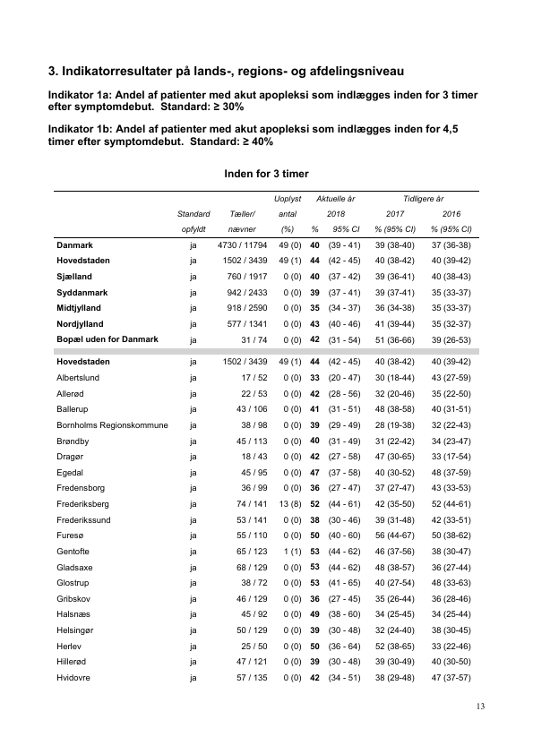
3.5.1 Scanned text or picture
Importing data from scanned text will require use of Optical Character Recognition (OCR). The tesseract library provides an R interface for OCR. In the example below, a picture is taken from same CDC website containing mortality data (https://www.cdc.gov/coronavirus/2019-ncov/covid-data/covidview/04102020/ nchs-data.html). The screenshot of this website was then cleaned in paint. The data is available in the Data-Use folder.
library(tesseract)
eng <- tesseract("eng") #english
text <- tesseract::ocr("./Data-Use/Covid_PNG100420.png", engine = eng)
cat(text)## NCHS Mortality Surveillance Data
## Data as of April 9, 2020
## For the Week Ending April 4, 2020 (Week 14)
##
## COVID-19 Deaths Pneumonia Deaths* Influenza Deaths
## Year Week TotalDeaths Number %ofTotal Number %ofTotal Number %of Total
## 2019 40 52,452 0 0 2,703 5.15 16 0.03
## 2019 4l 52,860 0 0 2,770 5.24 16 0.03
## 2019 42 54,129 0 0 2,977 5.50 18 0.03
## 2019 43 53,914 0 0 2,985 5.54 30 0.06
## 2019 44 53,980 0 0 2,908 5.39 31 0.06
## 2019 4S 55,468 0 0 3,063 5.52 31 0.06
## 2019 46 55,684 0 0 3,096 5.56 39 0.07
## 2019 47 55,986 0 0 2,993 5.35 50 0.09
## 2019 48 55,238 0 0 2,976 5.38 65 0.12
## 2019 49 56,990 0 0 3,305 5.80 99 0.17
## 2019 50 57,276 0 0 3,448 6.02 111 0.19
## 2019 51 56,999 0 0 3,345 5.87 125 0.22
## 2019 52 57,956 0 0 3,478 5.99 198 0.34
## 2020 4 58,961 0 0 3,998 6.77 416 0.71
## 2020 2 58,962 0 0 3,995 6.76 450 0.76
## 2020 3 57,371 0 0 3,903 6.78 44) 0.77
## 2020 4 56,666 0 0 3,742 6.56 468 0.83
## 2020 5 56,381 0 0 3,617 6.42 452 0.80
## 2020 6 56,713 0 0 3,599 6.35 482 0.85
## 2020 7 55,237 0 0 3,577 6.48 487 0.883.6 Web scraping
The readers may ask why web scraping for healthcare. A pertinent example related to COVID-19 data is provided below. The library rvest is helpful at scraping data from an internet page. The rvest library assumes that web contents have xml document-tree representation. The different options available for web scraping with rvest are available at the website https://rvest.tidyverse.org/reference/. The user can use CSS selectors to scrape content. The library Rselenium is also useful for web scraping. For dynamic web page, the library CasperJS library does a better job especially if the data contain embedded java script.
The library cdccovidview provides access to the CDC website on COVID-19. In the example below, we will try to this manually. Data from CDC website on COVID-19 is downloaded, cleaned and saved in csv format. It is important to pay attention to the data. The first row contains header and is removed. There are several columns with commas. These commas can be removed using the exercises above. Further the data is updated on weekly basis. As such the data needs to be converted into a date time format using lubridate.
##
## Attaching package: 'rvest'## The following object is masked from 'package:readr':
##
## guess_encodinglibrary(tidyverse)
#assign handle to web page accessed 12/4/20
#cdc<-read_html("https://www.cdc.gov/coronavirus/2019-ncov/covid-data/
# covidview/04102020/nchs-data.html")
# scrape all div tags
#html_tag <- cdc %>% html_nodes("div")
# scrape header h1 tags
#html_list<-html_tag %>% html_nodes("h1") %>% html_text()
#there is only one table on this web page
#Table1<- cdc %>% html_node("table") %>% html_table(fill = TRUE)
#Table1 has a header row
#Table1<-Table1[-1,]
#The data in the Total Deaths column has a comma
#Table1$Total.Deaths<-as.numeric(gsub(",","",Table1$`Total Deaths`))
#now combine the year and week column to Date
#Table1$Date<-lubridate::parse_date_time(paste(Table1$Year, Table1$Week, 'Mon', sep="/"),'Y/W/a')
#there are still commas remaining in some columns. This is a useful exercise for the reader. A solution is provided in the next example.
#write.csv(Table1,file="./Data-Use/Covid_Table100420.csv")The next example is from the CDC COVID-19 website. It poses a different challenges as there are several columns with the same names. In this case we will rename the column by index. There are several columns containing commas. Rather than removing column by column we will write a function with lapply to do it over the table. the apply function returns a matrix whereas lapply returns a dataframe. There is one column containing percentage enclosed in a bracket. This can be removed using the example above on metacharacter ie using doule back slash in front of bracket and again at close of bracket.
library(rvest)
library(tidyverse)
cdc<-
read_html("https://www.cdc.gov/mmwr/volumes/69/wr/mm6915e4.htm?s_cid=mm6915e4_w")
# scrape all div tags
html_tag <- cdc %>% html_nodes("div")
# scrape header h1 tags
html_list<-html_tag %>% html_nodes("h1") %>% html_text()
#there is only one table on this web page
Table2<- cdc %>% html_node("table") %>% html_table(fill = TRUE)
#first row is header
names(Table2) <- as.matrix(Table2[1, ])
Table2<-Table2[-c(1:2,55),]#rows 1 and 2 are redundant
#rename the columns by index
names(Table2)[2] <-"NumberCases31.03.20"
names(Table2)[3]<-"CumulativeIncidence31.03.20"
names(Table2)[4]<-"NumberCases07.04.20"
names(Table2)[5]<-"NumberDeath07.04.20"
names(Table2)[6]<-"CumulativeIncidence07.04.20"
#rather than removing column by column we will write a function with lapply to remove commas over the table. the apply function returns a matrix whereas lapply returns a dataframe.
Table2<-as.data.frame(lapply(Table2, function(y) gsub(",", "", y)))
Table2<-as.data.frame(lapply(Table2, function(x)
gsub("\\(|[0-9]+\\)","",x)))
#write.csv(Table2,file="./Data-Use/Covid_bystate_Table130420.csv")3.7 Medical Images
3.7.1 DICOM and nifti format
R can handle a variety of different data format. Medical images are stored as DICOM files for handling and converted to nifti files for analysis. The workhorses are the oro.dicom and oro.nifti libraries. Nifti is an S4 class object with multiple slots for data type. These slots can be accessed by typing the @ after the handle of the file. The values in an image can be evaluated using range function. Alternately, use cal_max and cal_min to perform the same task. It appears that in the conversion from minc file to nifti file, a scaling factor has been applied and transformed the values.
## oro.nifti 0.11.4##
## Attaching package: 'oro.nifti'## The following object is masked from 'package:dplyr':
##
## slice## [1] 0.000000000 0.001411765The slots also contain information on whether the data has been scaled. This can be checked by accessing the scl_slope and scl_inter slots. These data on slope and intercept provide a mean of returning an image to its correct value.
## [1] 1To find available slots
## [1] ".Data" "sizeof_hdr" "data_type" "db_name"
## [5] "extents" "session_error" "regular" "dim_info"
## [9] "dim_" "intent_p1" "intent_p2" "intent_p3"
## [13] "intent_code" "datatype" "bitpix" "slice_start"
## [17] "pixdim" "vox_offset" "scl_slope" "scl_inter"
## [21] "slice_end" "slice_code" "xyzt_units" "cal_max"
## [25] "cal_min" "slice_duration" "toffset" "glmax"
## [29] "glmin" "descrip" "aux_file" "qform_code"
## [33] "sform_code" "quatern_b" "quatern_c" "quatern_d"
## [37] "qoffset_x" "qoffset_y" "qoffset_z" "srow_x"
## [41] "srow_y" "srow_z" "intent_name" "magic"
## [45] "extender" "reoriented"In this example below we will simulated an image of dimensions 5 by 5 by 5. see simulation using mand library.
library(oro.nifti)
set.seed(1234)
dims = rep(5, 3)
SimArr = array(rnorm(5*5*5), dim = dims)
SimIm = oro.nifti::nifti(SimArr)
print(SimIm)## NIfTI-1 format
## Type : nifti
## Data Type : 2 (UINT8)
## Bits per Pixel : 8
## Slice Code : 0 (Unknown)
## Intent Code : 0 (None)
## Qform Code : 0 (Unknown)
## Sform Code : 0 (Unknown)
## Dimension : 5 x 5 x 5
## Pixel Dimension : 1 x 1 x 1
## Voxel Units : Unknown
## Time Units : UnknownView the simulated image.
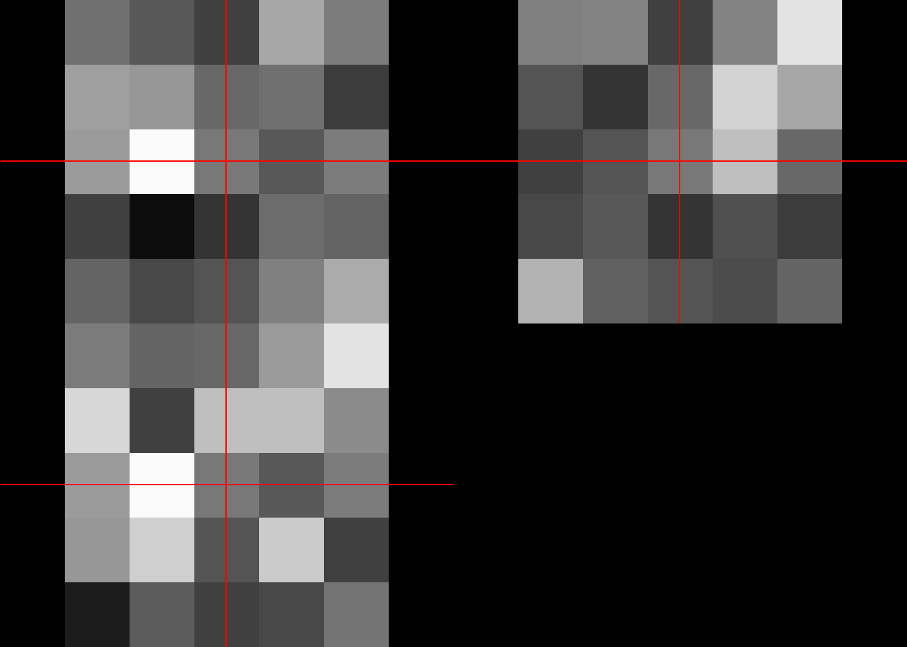
This section provides a brief introduction to viewing nifti files. Data are stored as rows, columns and slices. To view sagital image then assign a number to the row data.
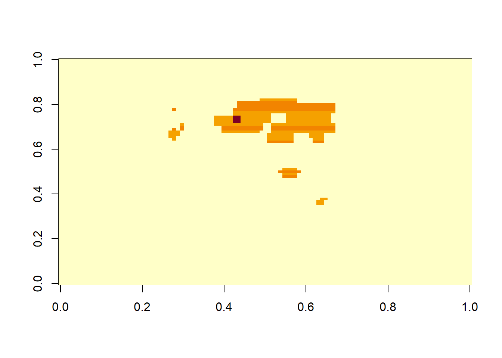
To see coronal image, assign a number to the column data.

To see axial image, assign a number to the slice data.
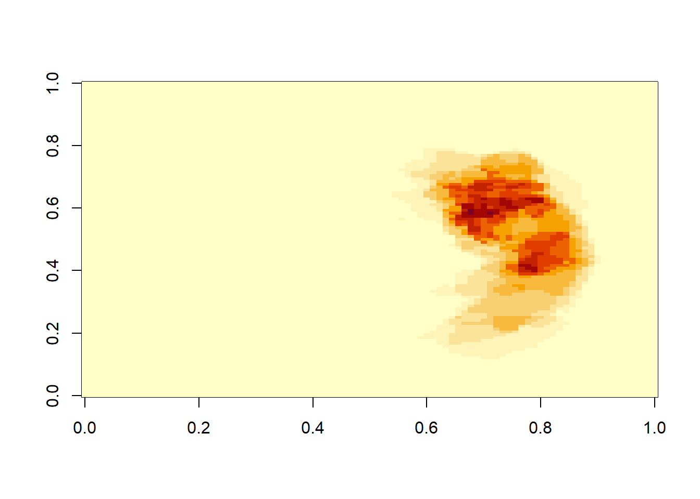
3.7.2 Manipulating array of medical images
These arrays of medical images should be treated no differently from any other arrays. The imaging data are stored as arrays within the .Data slot in nifti.
Data can be subset using the square bracket. The image is referred to x (right to left), y (front to back), z (superior to inferior).
library(oro.nifti)
#extract data as array using @ function
img<-readNIfTI("./Data-Use/mca_notpa.nii.gz", reorient = FALSE)
k<-img@.Data
#change x orientation to right to left 91*109*91
k1<-k[91:1,,]
#access slice 35 to verify that the image orientation has been switched.
image(k1[,,35])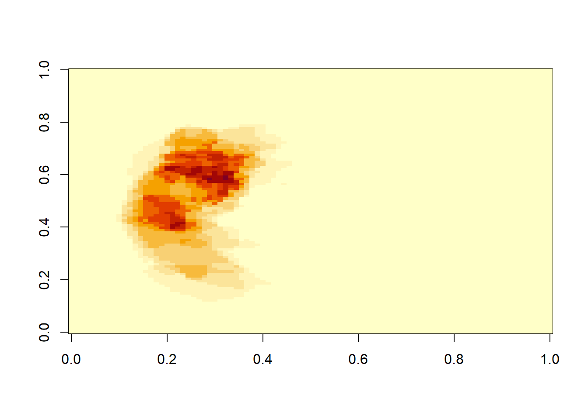
With the image now flipped to the other side, we can create an image by returning the array into a data slot.
## NIfTI-1 format
## Type : nifti
## Data Type : 16 (FLOAT32)
## Bits per Pixel : 32
## Slice Code : 0 (Unknown)
## Intent Code : 0 (None)
## Qform Code : 0 (Unknown)
## Sform Code : 1 (Scanner_Anat)
## Dimension : 91 x 109 x 91
## Pixel Dimension : 2 x 2 x 2
## Voxel Units : mm
## Time Units : secArrays can be manipulated to split an image into 2 separate images. Below is a function to split B0 and B1000 images from diffusion series.
#split dwi file into b0 and b1000
#assume that b1000 is the second volume
#dwi<-readNIfTI("....nii.gz",reorient = F)
DWIsplit<-function(D) {
DWI<-readNIfTI(D,reorient = F)
b1000<-dwi #dim (b1000) [1] 384 384 32 2
k<-dwi@.Data
b1000k<-k[,,,2] #dim(b1000k) [1] 384 384 32
writeNIfTI(b1000k,"b1000")
}Measurement of volume requires information on the dimensions of voxel.
#measure volume
A="./Ext-Data/3000F_mca_blur.nii"
VoxelDim<-function(A){
library(oro.nifti)
img<-readNIfTI(A,reorient = F)
VoxDim<-pixdim(img)
Volume<-sum(img>.5)*VoxDim[2]*VoxDim[3]*VoxDim[4]/1000
Volume
}
VoxelDim(A)## Malformed NIfTI - not reading NIfTI extension, use at own risk!## [1] 69Find unsigned angle between 2 vectors k and k1
## [1] 1.570771Determine centre of gravity of an object.
## dim1 dim2 dim3
## 65.74983 53.09204 46.670483.7.3 Combining arrays
This is an illustration of combining array using cbind.
## [1] 902629 2The abind function produces a different array output. Later we will repeat the same exercise using list function.
## [1] 91 109 182This example uses 25 files. Rather than open one file at a time create a list from pattern matching.
## CHNOSZ version 2.0.0 (2023-03-13)## reset: creating "thermo" object## OBIGT: loading default database with 1904 aqueous, 3448 total species##
## Attaching package: 'CHNOSZ'## The following object is masked from 'package:oro.nifti':
##
## slice## The following object is masked from 'package:dplyr':
##
## slice##
## Attaching package: 'RNiftyReg'## The following objects are masked from 'package:oro.nifti':
##
## pixdim, pixdim<-## The following object is masked from 'package:rvest':
##
## forward#create a list using pattern matching
mca.list<-list.files(path="./Ext-Data/",pattern = "*.nii", full.names = TRUE)
#length of list
length(mca.list)## [1] 42#read multiple files using lapply function
#use lappy to read in the nifti files
#note lapply returns a list
mca.list.nii <- lapply(mca.list, readNIfTI)## Malformed NIfTI - not reading NIfTI extension, use at own risk!## Malformed NIfTI - not reading NIfTI extension, use at own risk!
## Malformed NIfTI - not reading NIfTI extension, use at own risk!
## Malformed NIfTI - not reading NIfTI extension, use at own risk!
## Malformed NIfTI - not reading NIfTI extension, use at own risk!
## Malformed NIfTI - not reading NIfTI extension, use at own risk!
## Malformed NIfTI - not reading NIfTI extension, use at own risk!
## Malformed NIfTI - not reading NIfTI extension, use at own risk!
## Malformed NIfTI - not reading NIfTI extension, use at own risk!
## Malformed NIfTI - not reading NIfTI extension, use at own risk!
## Malformed NIfTI - not reading NIfTI extension, use at own risk!
## Malformed NIfTI - not reading NIfTI extension, use at own risk!
## Malformed NIfTI - not reading NIfTI extension, use at own risk!
## Malformed NIfTI - not reading NIfTI extension, use at own risk!
## Malformed NIfTI - not reading NIfTI extension, use at own risk!
## Malformed NIfTI - not reading NIfTI extension, use at own risk!
## Malformed NIfTI - not reading NIfTI extension, use at own risk!
## Malformed NIfTI - not reading NIfTI extension, use at own risk!
## Malformed NIfTI - not reading NIfTI extension, use at own risk!
## Malformed NIfTI - not reading NIfTI extension, use at own risk!
## Malformed NIfTI - not reading NIfTI extension, use at own risk!
## Malformed NIfTI - not reading NIfTI extension, use at own risk!
## Malformed NIfTI - not reading NIfTI extension, use at own risk!
## Malformed NIfTI - not reading NIfTI extension, use at own risk!
## Malformed NIfTI - not reading NIfTI extension, use at own risk!## [1] "list"This example illustrates how to view the first image in the list.
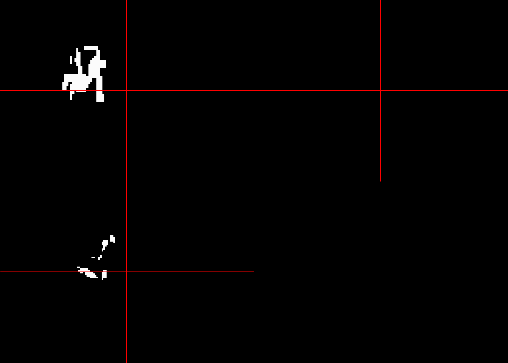
In this example, the first 3 segmented images from the list are averaged and viewed.
#view average image
mca_ave3<-(mca.list.nii[[5]]+mca.list.nii[[6]]+mca.list.nii[[7]])/3
neurobase::ortho2(mca_ave3)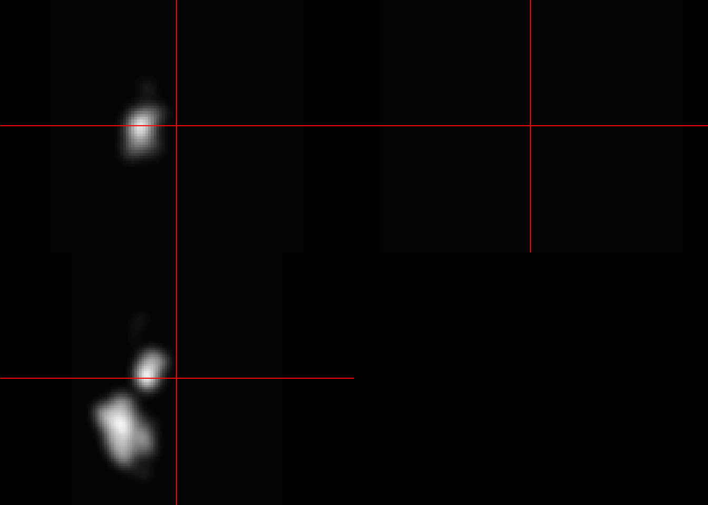
The output below is the same as above but is performed on arrays. The image_data function from oro.nifti library extracts the image attribute from the slot .Data.
#extract multiple arrays using lapply
mca.list.array<-lapply(mca.list.nii, img_data)
m3<-(mca.list.array[[5]]+mca.list.array[[6]]+mca.list.array[[7]])/3
#compare this with the output from above
neurobase::double_ortho(m3, mca_ave3)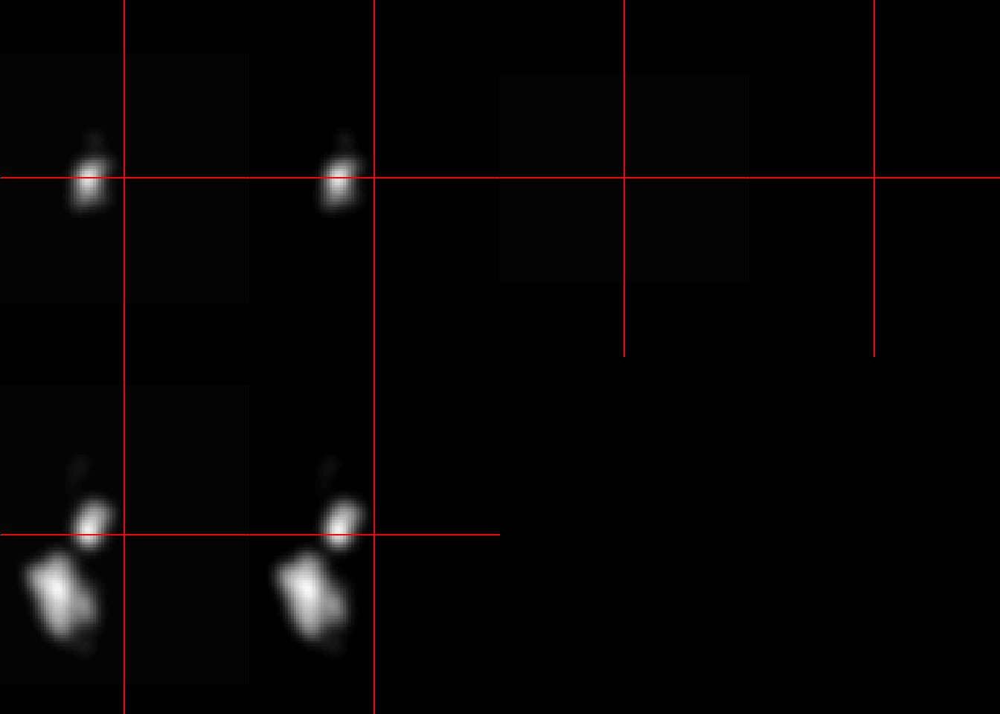
Arrays can be extracted from list using list2array function.
## [1] "list"#convert list to array
#CHNOSZ function
m.listarray<-CHNOSZ::list2array(mca.list.array)#91 109 91 25
class(m.listarray)## [1] "array"3.7.4 Math operation on multidimensional array
Before illustrating more complex operations on ultidimensional array or tensor, let’s consider the basics of multidimensional array. The rank of a tensor represents the dimension of an array. Rank 0 represents 1 dimension and so on.
Here we use apply function to average over every element of the multidimensional array. The first argument of apply is the array, the second argument is the margin or the component for analysis and the last argument is the function. If the idea is to analyse the row then the margin argument is c(1), column then the margin argumen is c(2) and so on.
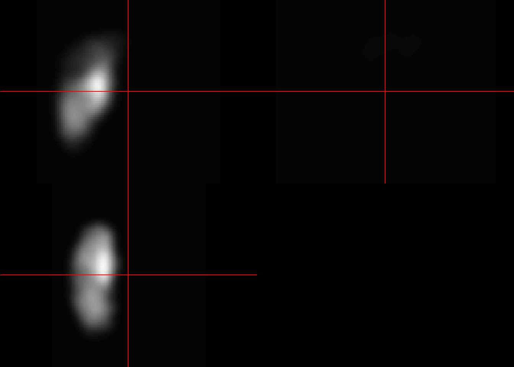
Thresholding can be performed using mask_img function. This function can also be used to create a mask.
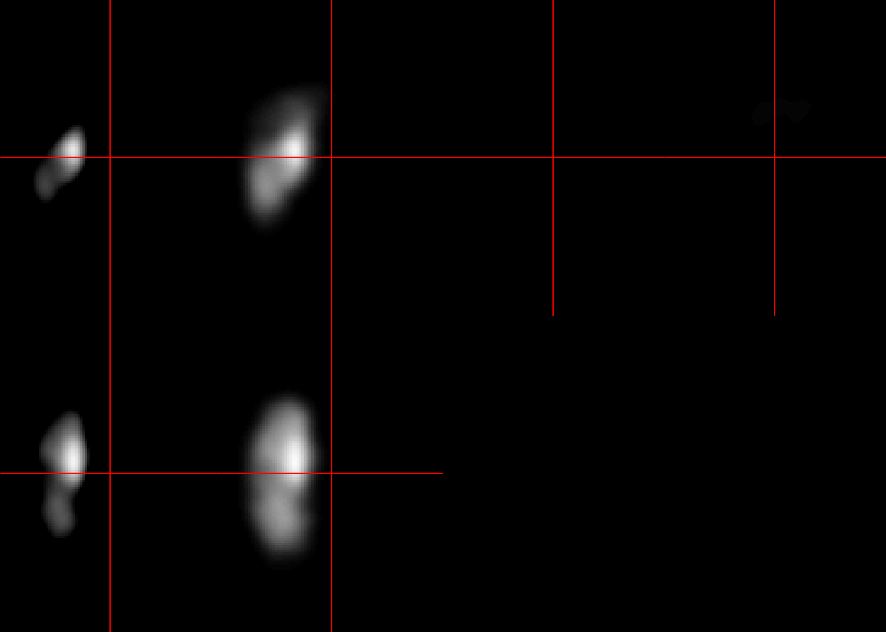
3.7.5 Math operation on list
In this example we us lapply to a function within a list. This is an example of a functional or a function which takes a function as an input and return a vector as an output. In this example, a functional operates on one element of the list at a time. This example of functional is the same as the function VoxelDim describes above.
vox=unlist(lapply(mca.list.nii,
function(A) sum(A>.5)*
#obtain voxel dimensions
oro.nifti::pixdim(A)[2]*
oro.nifti::pixdim(A)[3]*
oro.nifti::pixdim(A)[4]/1000
))
vox## [1] 0.000 0.000 0.000 0.000 69.000 3.624 8.768 58.200 326.760
## [10] 1.608 0.000 3.904 3.328 66.776 106.976 70.928 26.912 11.768
## [19] 17.592 14.720 151.872 87.528 0.000 24.192 80.248 152.792 69.552
## [28] 25.576 0.000 8.644 4.230 3.781 3.643 5.720 5.061 8.644
## [37] 4.230 3.781 3.643 5.720 5.061 43.9683.7.6 Vectorising nifti object
One way of handling imaging data for analysis is to flatten the image, then create an empty array of the same size to return the image.
#flatten 3D
niivector = as.vector(img[,,]) #902629
#Create empty array of same size to fill up
niinew = array(0, dim=dim(img))
#return to 3D
niinew = array(niivector, dim=dim(img))
#confirm
neurobase::ortho2(niinew)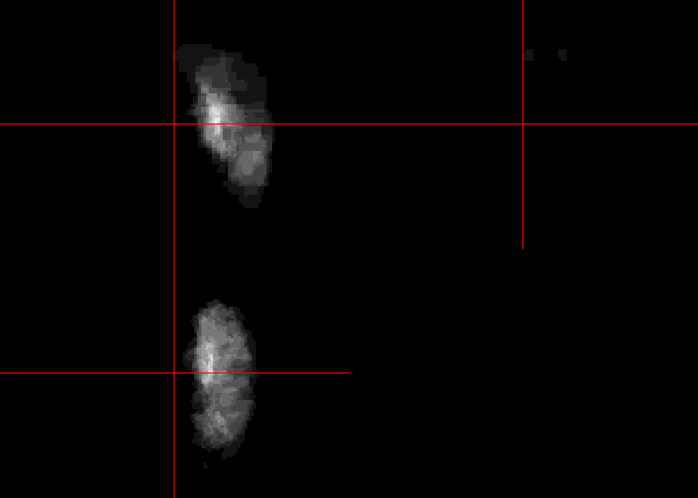
Another way of creating vector from the image is to use c function.
3.7.7 tar file
Image files can be large and are often stored as tar files. The tar (tgz file), untar, zip (gz file) and unzip function are from the utils library.
colin_1mm<-untar("./Data-Use/colin_1mm.tgz")
colinIm<-readNIfTI("colin_1mm") #1 x 1 x 1
class(colinIm)## [1] "nifti"
## attr(,"package")
## [1] "oro.nifti"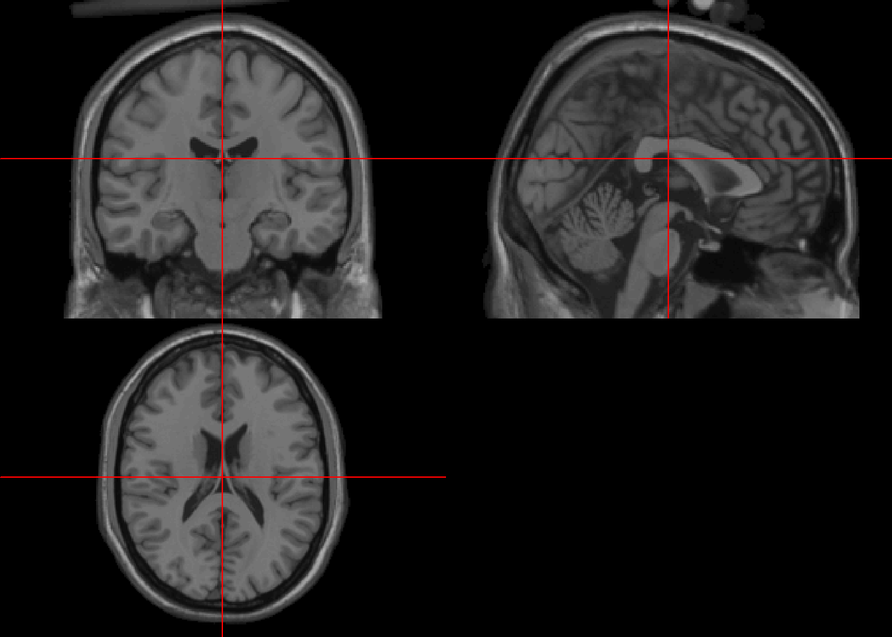
The readNIfTI call can open gz file without the need to call unzip function.
library(RNiftyReg)
epi_t2<- readNIfTI(system.file("extdata", "epi_t2.nii.gz", package="RNiftyReg"))
class(epi_t2)## [1] "nifti"
## attr(,"package")
## [1] "oro.nifti"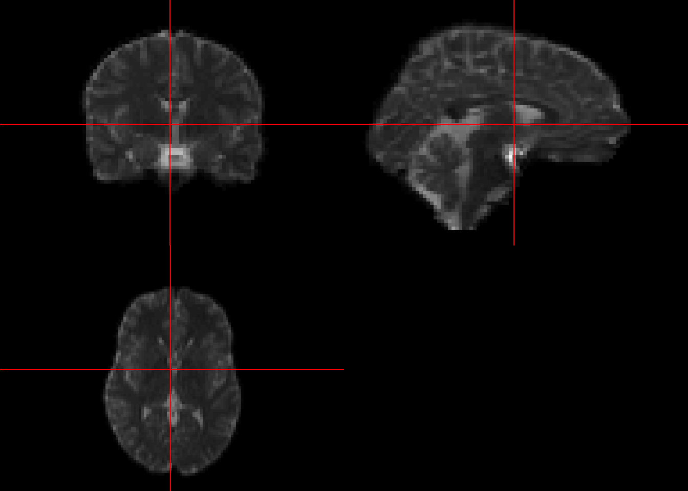
3.7.8 Image registration
There are many different libraries for performing registration.
library(RNiftyReg)
#example from data
source<-readNifti("./Data-Use/mca10_pca10_border10.nii.gz")
pixdim(source)## [1] 2 2 2## [1] 1 1 1 1## Image array of mode "double" (54.2 Mb)
## - 181 x 217 x 181 x 1 voxels
## - 1 x 1 x 1 mm x 1 s per voxel#register source to target
result <- niftyreg(source, target)
#affine transformation
result$forwardTransforms## [[1]]
## NiftyReg affine matrix:
## 0.773388 0.569432 0.471194 4.534728
## -0.595046 0.720880 -0.807965 -19.901979
## -0.562192 -0.069332 0.552411 21.512533
## 0.000000 0.000000 0.000000 1.000000## Image array of mode "double" (54.2 Mb)
## - 181 x 217 x 181 voxels
## - 1 x 1 x 1 mm per voxel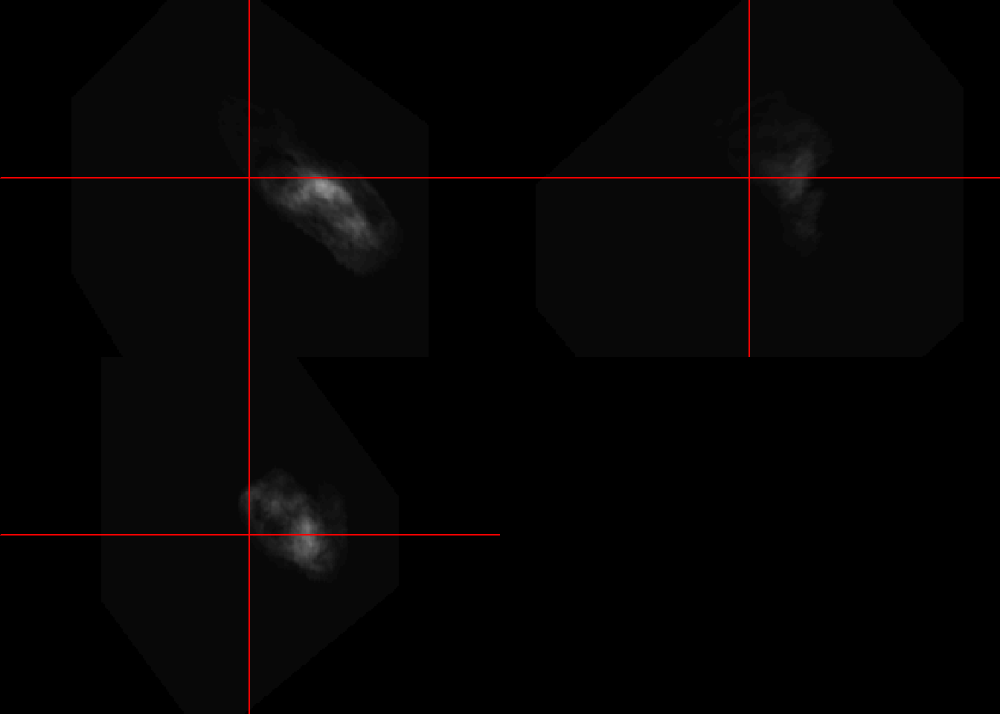
Output from RNiftyReg are niftiImage objects. They can be converted to oro.nifti objects using nii2oro function.
otarget<-nii2oro(target)
oimage<-nii2oro(result$image)
overlay(otarget, y=oimage,z = 90, plot.type = "single" )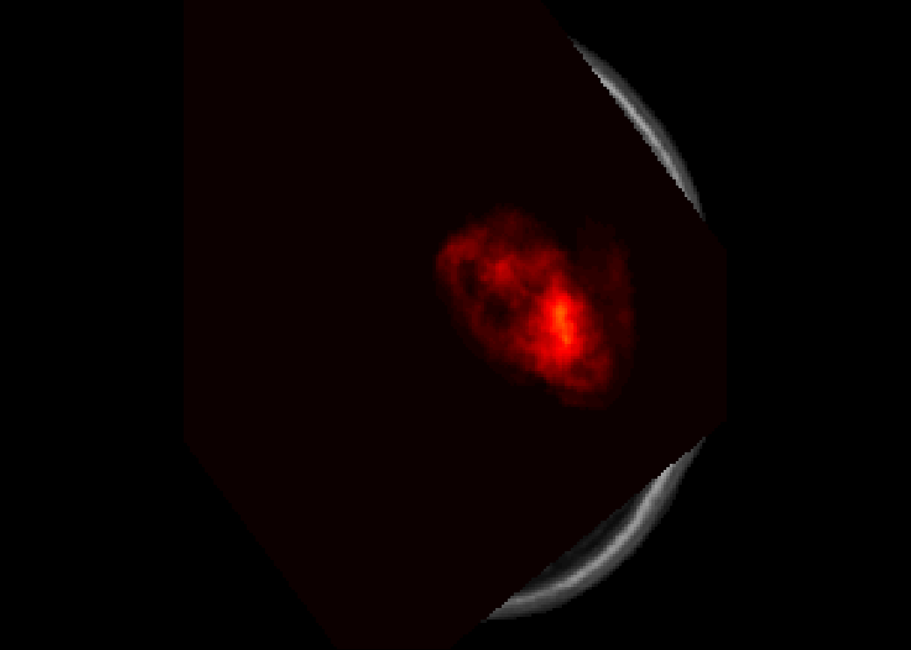
3.7.9 Rescaling
Perform affine registration and resampling of image using the transformation file.
## Image array of mode "double" (6.9 Mb)
## - 91 x 109 x 91 voxels
## - 2 x 2 x 2 mm per voxelcolin_affine<-buildAffine(source=ica1000, target=target)
#apply transformation from above
#assume 1000M_ica.nii and source are in the same space
colin_like<-applyTransform(colin_affine,ica1000)
neurobase::ortho2(colin_like)
Resampling an image to different dimensions. This example is different from above in which rescaling is performed as part of registration to higher resolution image. Here the rescale function from RNiftyReg library is used to change the dimensions from 1x1x1 mm to 2x2x2 mm.
## Image array of mode "double" (6.9 Mb)
## - 91 x 109 x 91 voxels
## - 2 x 2 x 2 mm per voxel## Image array of mode "double" (855.6 Kb)
## - 45 x 54 x 45 voxels
## - 4 x 4 x 4 mm per voxel3.7.10 MNI template
There are several different MRI templates. The well known one is the MNI 152 template (Mazziotta J 2001). This was developed from male right-handed medical students. The MNI 152 is also known as International Consortium for Brain Mapping (ICBM) 152.
3.7.11 Atlases
A list of available atlases for human and animals is available at https://loni.usc.edu/research/atlases.
3.7.11.1 AAL atlas
The automated anatomical labeling (AAL) atlas of activation contains 45 volume of interest in each hemisphere (Tzourio-Mazoyer N 2002). The atlas is aligned to MNI 152 coordinates. The updated AAL has additional parcellation of orbitofrontal cortex. AAL3 update includes further parcellation of thalamus.
library(rgl)
library(misc3d)
library(MNITemplate)
#source("https://neuroconductor.org/neurocLite.R")
#neuro_install('aal')
library(aal)
library(neurobase)
library(magick)## Linking to ImageMagick 6.9.12.3
## Enabled features: cairo, freetype, fftw, ghostscript, heic, lcms, pango, raw, rsvg, webp
## Disabled features: fontconfig, x11library(oro.nifti)
img = aal_image()
template = readMNI(res = "2mm")
cut <- 4500
dtemp <- dim(template)
# All of the sections you can label
labs = aal_get_labels()
# highlight - in this case the Cingulate_Post_L
cingulate = labs$index[grep("Cingulate_Post_R", labs$name)]
#mask of object for rendering
mask = remake_img(vec = img %in% cingulate, img = img)
#contour for MNI template
contour3d(template, x=1:dtemp[1], y=1:dtemp[2], z=1:dtemp[3], level = cut, alpha = 0.1, draw = TRUE)
#contour for mask
contour3d(mask, level = c(0.5), alpha = c(0.5), add = TRUE, color=c("red") )
### add text
text3d(x=dtemp[1]/2, y=dtemp[2]/2, z = dtemp[3]*0.98, text="Top")
text3d(x=-0.98, y=dtemp[2]/2, z = dtemp[3]/2, text="Right")
#create movie
#movie file is saved to temporary folder
#movie3d(spin3d(),duration=30)
#add digital map of mca territory
MCA<-readNIfTI("./Data-Use/MCA_average28_MAP_100.nii")## Malformed NIfTI - not reading NIfTI extension, use at own risk!#mask2 = remake_img(vec = img %in% source, img = img)
contour3d(template, x=1:dtemp[1], y=1:dtemp[2], z=1:dtemp[3], level = cut, alpha = 0.1, draw = TRUE)
#contour for mask
contour3d(MCA, level = c(0.5), alpha = c(0.5), add = TRUE, color=c("Yellow"))
#add frontal
angular = labs$index[grep("Angular_R", labs$name)]
#mask of object for rendering
mask2 = remake_img(vec = img %in% angular, img = img)
contour3d(mask2, level = c(0.5), alpha = c(0.5), add = TRUE, color=c("red"))
#add cingulate
contour3d(mask, level = c(0.5), alpha = c(0.5), add = TRUE, color=c("blue"))
### add text
text3d(x=dtemp[1]/2, y=dtemp[2]/2, z = dtemp[3]*0.98, text="Top")
text3d(x=-0.98, y=dtemp[2]/2, z = dtemp[3]/2, text="Right")
#create movie
#movie file is saved to temporary folder
#movie3d(spin3d(),duration=5)
#rglwidget()3.7.11.2 Eve template
The Eve template is from John Hopkins (“Atlas-Based Whole Brain White Matter Analysis Using Large Deformation Diffeomorphic Metric Mapping: Application to Normal Elderly and Alzheimer’s Disease Participants.” 2009). It is a single subject high resolution white matter atlas that has been morphed into MNI 152 coordinates. The atlas is parcellated into 176 regions based on ICBM-DTI-81 atlas.
#source("https://neuroconductor.org/neurocLite.R")
#neuro_install('EveTemplate', release = "stable", release_repo = "github")
library(EveTemplate)
eve_labels = readEveMap(type = "II")
eve_labels## NIfTI-1 format
## Type : nifti
## Data Type : 4 (INT16)
## Bits per Pixel : 16
## Slice Code : 0 (Unknown)
## Intent Code : 0 (None)
## Qform Code : 2 (Aligned_Anat)
## Sform Code : 1 (Scanner_Anat)
## Dimension : 181 x 217 x 181
## Pixel Dimension : 1 x 1 x 1
## Voxel Units : mm
## Time Units : Unknown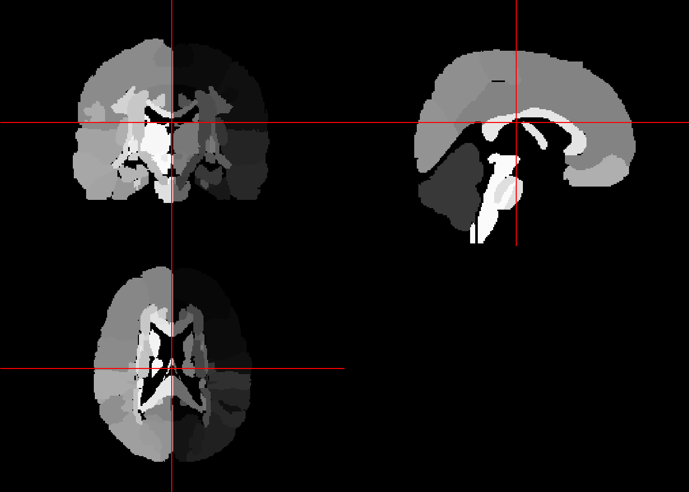
library(RColorBrewer)
library(tidyverse)
unique_labs = eve_labels %>%
c %>%
unique %>%
sort
breaks = unique_labs
rf <- colorRampPalette(rev(brewer.pal(11,'Spectral')))
cols <- rf(length(unique_labs))
neurobase::ortho2(eve_labels, col = cols, breaks = c(-1, breaks))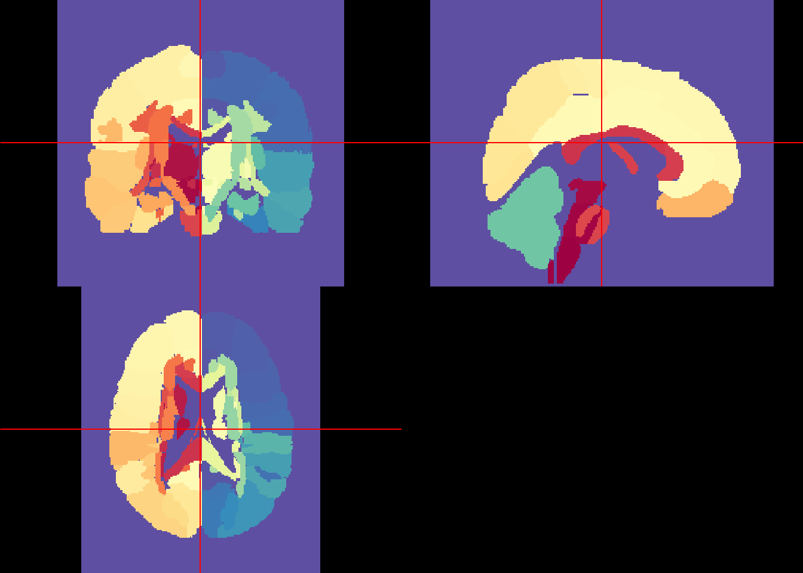
3.7.11.3 Sensorimotor tract atlas
Template for corticofugal tracts from primary motor cortex, dorsal premotor cortex, ventral premotor cortex, supplementary motor area (SMA), pre-supplementary motor area (preSMA), and primary somatosensory cortex is available from (Derek B Archer 2018). Below is an illustration of the M1 tract obtained from LRNLAB.
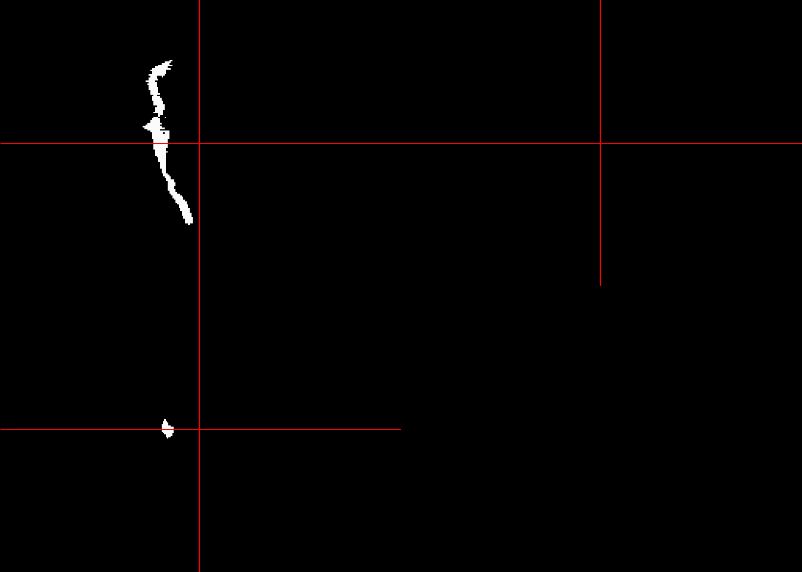
3.8 ECG Signal processing
The ECG records the electrical signal from the heart. In a clinical record it is performed as a 12 lead recording. The ECG contains an initial P wave which originates from the atrium. The P wave is absent in patients with atrial fibrillation. The RR interval is used to measure the heart rate. A false assumption is that the heart rate is constant but measurement shows beat to beat variation. Heart rate variability is a feature of health.
3.8.0.1 ECG data
The ecg dataset of one patient contains 2048 observations collected at a rate of 180 samples per second.
library(ade4)
data("ecg") #ts object
#Time Series:
#Start = 0.31
#End = 11.6822222222222
#Frequency = 180
head(ecg)## [1] -0.104773 -0.093136 -0.081500 -0.116409 -0.081500 -0.116409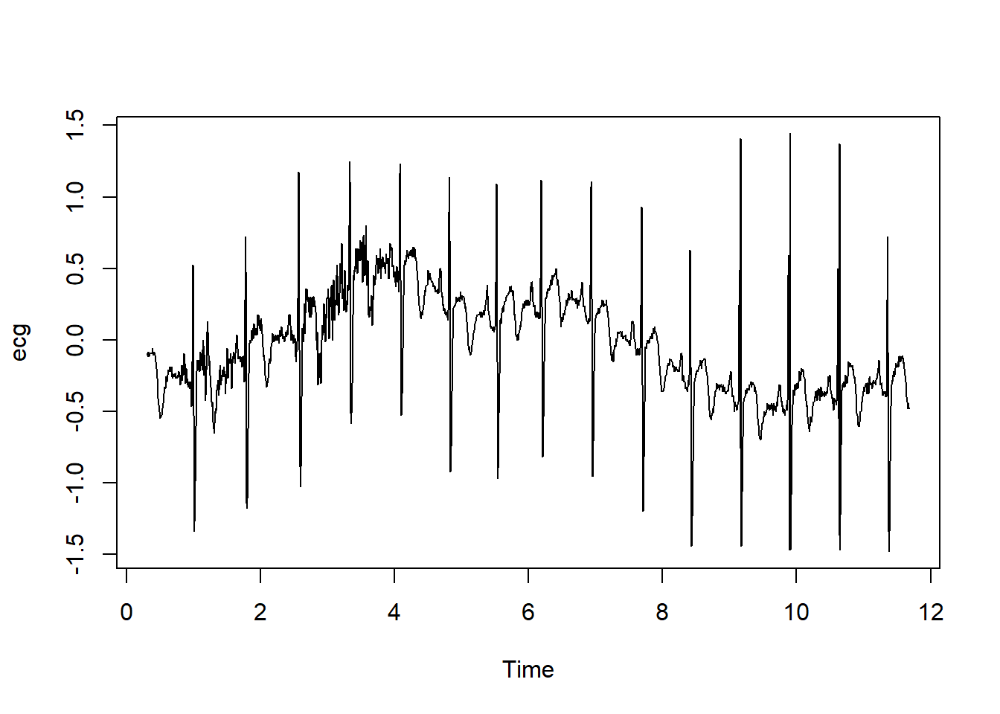
Let’s look now at the Hart dataset.
ECG<-read.csv("../../DataMining/python_journey/Heart/ECG/data.csv")
#ECG is a dataframe object
plot(as.ts(ECG)) # from base R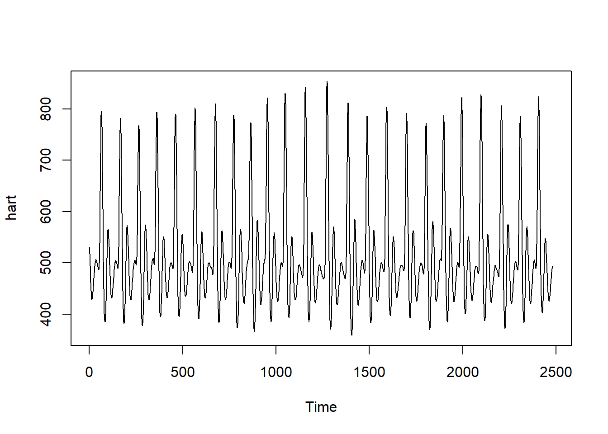
create a ts object by providing starting and end time and frequency. the plot of the data now has a new x limit.
EEGECG<-read.csv("../../DataMining/python_journey/Heart/ECG/eeg_stroke_ecg.csv")
#this data has 2 columns time and ECG
plot(as.ts(EEGECG$ECG))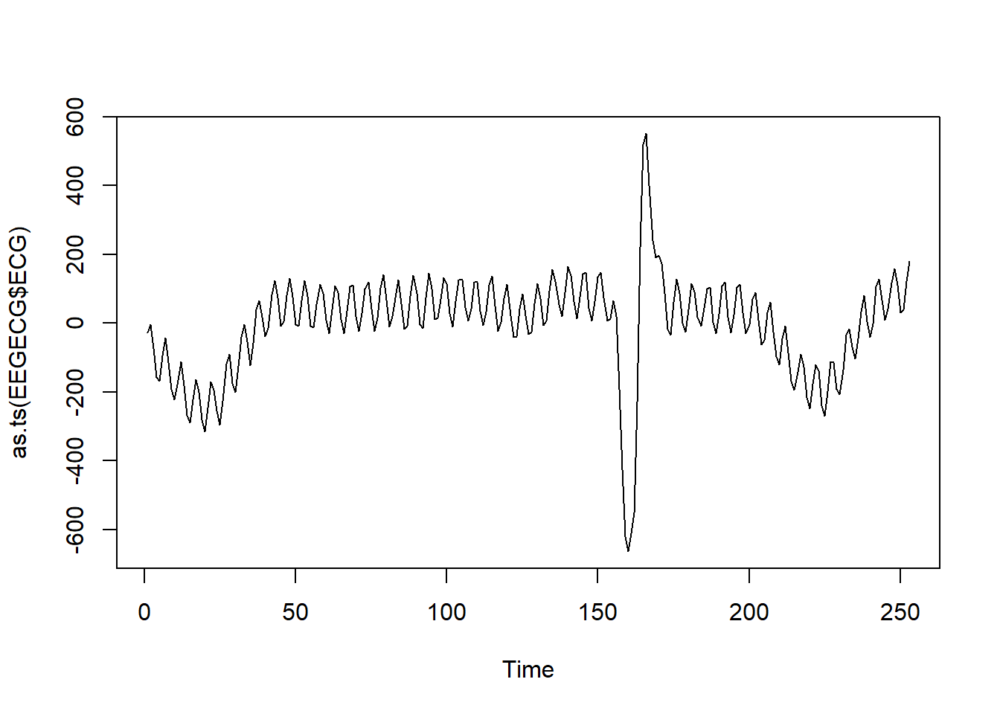
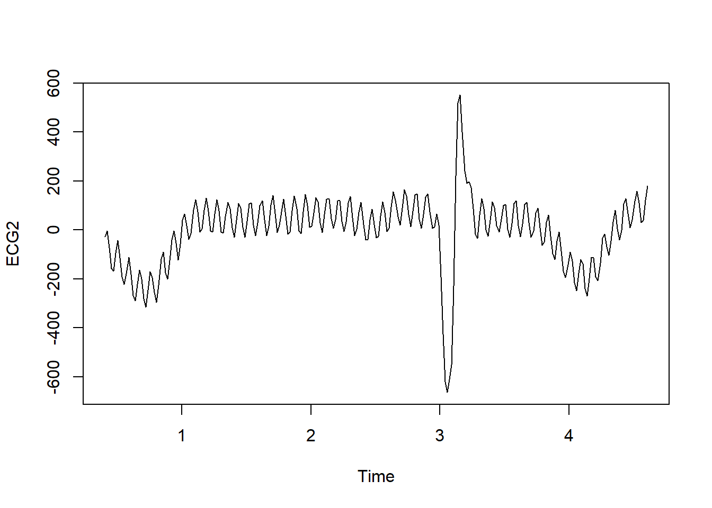
Here we illustrate the use of RHRV package to analyse ECG signal (Rodriguez-Linares et al. 2017). The code is provided on the RHRV website https://rhrv.r-forge.r-project.org/documentation.html. The example.beats data was download from this website and stored in the Data-Use folder. Here we make changes regarding the path of the data.
## Loading required package: waveslim##
## waveslim: Wavelet Method for 1/2/3D Signals (version = 1.8.4)##
## Attaching package: 'waveslim'## The following object is masked from 'package:CHNOSZ':
##
## basis## The following object is masked from 'package:lubridate':
##
## pm## Loading required package: nonlinearTseries## Registered S3 method overwritten by 'quantmod':
## method from
## as.zoo.data.frame zoo##
## Attaching package: 'nonlinearTseries'## The following object is masked from 'package:grDevices':
##
## contourLines## Loading required package: lombhrv.data = CreateHRVData()
hrv.data = SetVerbose(hrv.data, TRUE)
#setwd("C:/RHRV")
hrv.data = LoadBeatAscii(hrv.data, "example.beats.txt",
RecordPath = "./Data-Use/" )## Loading beats positions for record: example.beats.txt## Path: ./Data-Use/## Scale: 1## Date: 01 / 01 / 1900
## Time: 00 : 00 : 00## Number of beats: 17360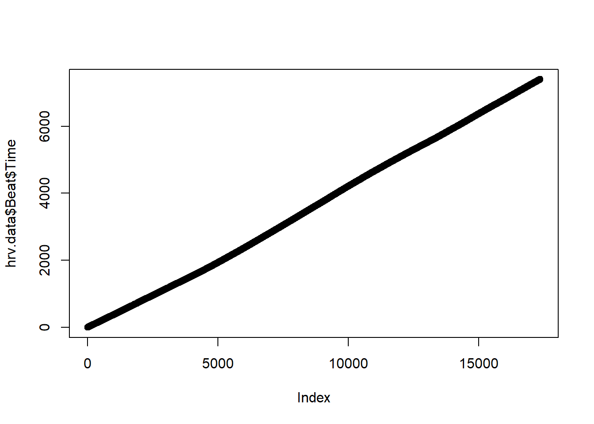
## Calculating non-interpolated heart rate
## Number of beats: 17360## Plotting non-interpolated instantaneous heart rate## Number of points: 17360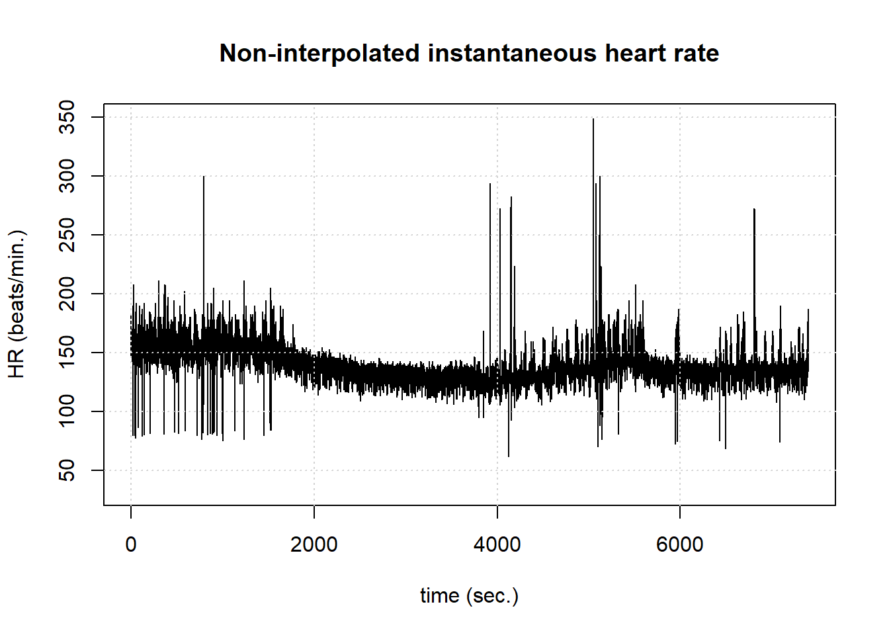
## Filtering non-interpolated Heart Rate## Number of original beats: 17360## Number of accepted beats: 17248## Plotting non-interpolated instantaneous heart rate## Number of points: 17248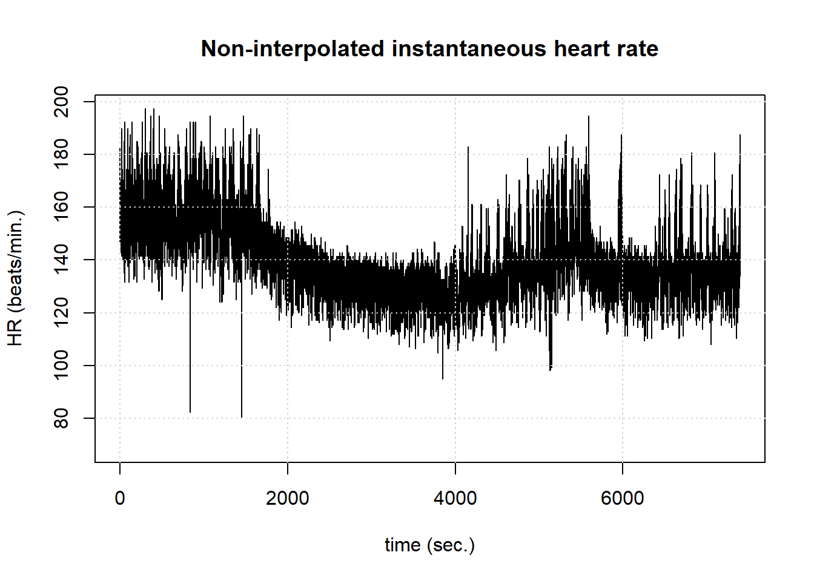
3.9 EEG signal processing
The eegUtils package has useful methods for plotting EEG. https://craddm.github.io/eegUtils/index.html. According to the site, it has functions for importing data from Biosemi, Brain Vision Analyzer, and EEGLAB.
#devtools::install_github("mne-tools/mne-r")
#remotes::install_github("craddm/eegUtils@develop")
library(eegUtils)##
## Attaching package: 'eegUtils'## The following object is masked from 'package:stats':
##
## filter## Creating epochs based on combinations of variables: epoch_label participant_id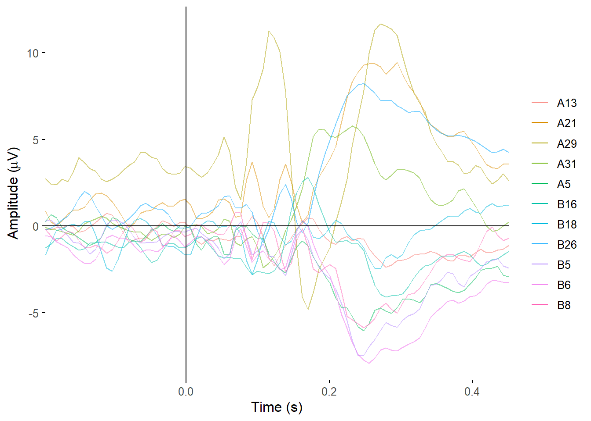
## Creating epochs based on combinations of variables: epoch_label participant_id## Using electrode locations from data.## Plotting head r 95 mm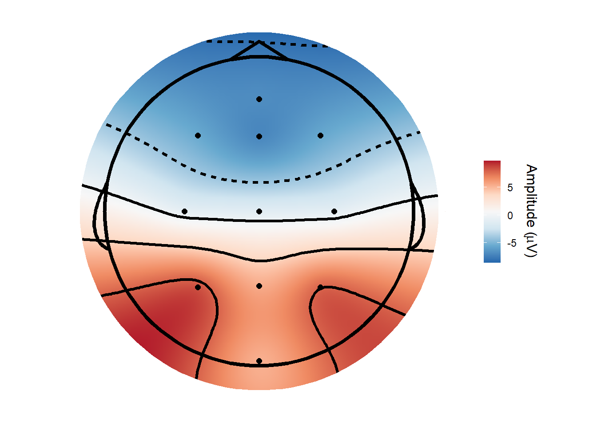
The following data is from https://datashare.ed.ac.uk/handle/10283/2189
library(eegUtils)
library(R.matlab)
limo_test <- import_set("limo_dataset_S1.set")
limo_cont <- R.matlab::readMat("continuous_variable.mat")
limo_cat <- readr::read_csv("categorical_variable.txt",
col_names = c("cond_lab"))The MNE-R package is an interface to MNE package in Python.
3.10 Python
Python can be run directly from R markdown file. It requires that python be specified instead of R. The use of python here requires that Miniconda or Anaconda be installed. Installation of [Miniconda][Minconda environment] via reticulate package will be shown below.
import pandas as pd
import matplotlib.pyplot as plt
import numpy as np
#dataset containing locations of ms clinics in Victoria
dataset = pd.read_csv('./Data-Use/msclinic.csv') #Read data from CSV datafile
dat=pd.DataFrame(dataset)
#print 10 rows
print(dat.head(10))## id public clinic ... lat lon metropolitan
## 0 mmc 1 1 ... -37.920668 145.123387 1
## 1 rmh 1 1 ... -37.778945 144.946894 1
## 2 aus 1 1 ... -37.756412 145.060279 1
## 3 alf 1 1 ... -37.845960 144.981852 1
## 4 stvin 1 1 ... -37.807586 144.975029 1
## 5 bhh 1 1 ... -37.813525 145.118510 1
## 6 frankston 1 1 ... -38.151211 145.129160 1
## 7 geelong 1 1 ... -38.152047 144.364647 0
## 8 sunshine 1 1 ... -37.760219 144.815301 1
## 9 northern 1 0 ... -37.652886 145.014486 1
##
## [10 rows x 10 columns]## Use exit() or Ctrl-Z plus Return to exitPassing Python object to R and py$ in front of Python object in R.
To pass a R object to python then add r. in front of object.
## hart
## 0 530
## 1 518
## 2 506
## 3 494
## 4 483
## ... ...
## 2478 489
## 2479 491
## 2480 492
## 2481 493
## 2482 494
##
## [2483 rows x 1 columns]The data can now be plotted using matplotlib library from Python.
import pandas as pd
import matplotlib.pyplot as plt
import numpy as np
import math
#Matplotlib
plt.title("Heart Rate Signal") #The title of our plot
#ECG is data frame and hart is the column
plt.plot(r.ECG.hart) #Draw the plot object
#Display the plot
plt.show()
exit3.10.1 Reticulate
Information on the use of Python in R is available at https://rstudio.github.io/reticulate/. The package reticulate can import Python function to work directly in R. Note that the chunk code heading here is r.
## [1] ".git"
## [2] ".gitignore"
## [3] ".Rhistory"
## [4] ".Rproj.user"
## [5] ".travis.yml"
## [6] "01-intro.Rmd"
## [7] "02-Data-Wrangling.Rmd"
## [8] "03-Statistics.Rmd"
## [9] "04-multivariate-analysis.Rmd"
## [10] "05-machinelearning.Rmd"
## [11] "06-machinelearningpt2.Rmd"
## [12] "07-Bayesian-analysis.Rmd"
## [13] "08-operational-research.Rmd"
## [14] "09-graph-theory.Rmd"
## [15] "10-geospatial-analysis.Rmd"
## [16] "11-App.Rmd"
## [17] "12-Appendix.Rmd"
## [18] "13-references.Rmd"
## [19] "Applications-of-R-in-Healthcare.bbl"
## [20] "Applications-of-R-in-Healthcare.blg"
## [21] "Applications-of-R-in-Healthcare.log"
## [22] "Applications-of-R-in-Healthcare.Rmd"
## [23] "Applications-of-R-in-Healthcare.tex"
## [24] "Applications-of-R-in-Healthcare.toc"
## [25] "Applications-of-R-in-Healthcare_files"
## [26] "Applications_of_R_in_Healthcare_files"
## [27] "bbc.png"
## [28] "book.bib"
## [29] "bookdown-demo.log"
## [30] "bookdown-demo.tex"
## [31] "bookdown-demo_files"
## [32] "bym2.stan"
## [33] "bym_predictor_plus_offset.stan"
## [34] "car.stan"
## [35] "car_ht.stan"
## [36] "colin_1mm.hdr"
## [37] "colin_1mm.img"
## [38] "colin_1mm.mat"
## [39] "cta.csv"
## [40] "Data-Use"
## [41] "DESCRIPTION"
## [42] "desktop.ini"
## [43] "DKnut2.graph"
## [44] "Dockerfile"
## [45] "Ext-Data"
## [46] "Fagan_SpotSign.png"
## [47] "HealthcareRbook.Rproj"
## [48] "index.Rmd"
## [49] "LICENSE"
## [50] "lm.rds"
## [51] "lm.stan"
## [52] "lmr.rds"
## [53] "lmr.stan"
## [54] "Logistic_GeneticAlgorithm.Rda"
## [55] "Logistic_SimulatedAnnealing.Rda"
## [56] "NGS_publications_per_journal.txt"
## [57] "NGS_publications_per_year.txt"
## [58] "normal_regression.stan"
## [59] "now.json"
## [60] "NY.graph"
## [61] "Occipital-Visual.html"
## [62] "Occipital-Visual.png"
## [63] "packages.bib"
## [64] "preamble.tex"
## [65] "README.md"
## [66] "rodentData.xlsx"
## [67] "schools.stan"
## [68] "style.css"
## [69] "svc.stan"
## [70] "toc.css"
## [71] "total_journal.Rda"
## [72] "world_income.png"
## [73] "_book"
## [74] "_bookdown.yml"
## [75] "_bookdown_files"
## [76] "_build.sh"
## [77] "_deploy.sh"
## [78] "_output.yml"Here we provide another example on how to use Python in R. Note the change in the way we extract the stats module from scipy Python package.
data("mtcars") #mtcars data in R
library(reticulate)
np<-import("numpy")
pd<-import("pandas")
#equivalent in Python is from scipy import stats
sc<-import("scipy")
sc$stats$linregress(mtcars$mpg,mtcars$cyl)## LinregressResult(slope=-0.2525149506667544, intercept=11.260683180739264, rvalue=-0.8521619594266132, pvalue=6.112687142580981e-10, stderr=0.02830980675303087, intercept_stderr=0.5930361857152716)3.10.2 Minconda
Miniconda and Anaconda can be installed directly from its website. Here we will illustrate installation of Miniconda from Rstudio. The install_miniconda function from reticulate library download Miniconda from the web.
#library(reticulate)
#this function is turned off as it only needs to be done once
#install_miniconda(path = miniconda_path(), update = TRUE, force = FALSE)To find the libraries install in Miniconda
3.10.3 Python environment
Unless specified, the default environment is r-reticulate. Setting the Python environment is important to avoid package incompatibility. To set the environment
Some Python libraries such as pycox can be installed in R using install_py… this way.Some python packages have
library(reticulate)
#library(survivalmodels)
#install pycox for survivalmodels
#install_pycox(pip = TRUE, install_torch = TRUE)
#install_keras(pip = TRUE, install_tensorflow = TRUE)
#install other Python packages
#this is similar to pip install torch
#install_torch(method = "auto", conda = "auto", pip = TRUE)3.11 Matlab
The package R.mat provides interface between R and Matlab. This is useful for running EEG analysis where we import analysis from Matlab for visualisation in R. Matlab must be installed to for this to run.
3.12 Stata
The package Rs provides interface between R and Stata. Stata must be installed to for this to run.
Reference a figure by its code chunk label with the fig: prefix, e.g., see Figure ??. Similarly, you can reference tables generated from knitr::kable(), e.g., see Table 3.1.
| Mon_SBP | Tues_SBP | Wed_SBP | SBP |
|---|---|---|---|
| 160 | 0 | NA | 0 |
| NA | 0 | 130 | 0 |
| 180 | 150 | 125 | 1 |
| Jurisdiction | NumberCases31.03.20 | CumulativeIncidence31.03.20 | NumberCases07.04.20 | NumberDeath07.04.20 | CumulativeIncidence07.04.20 | Absolute.change.in.cumulative.incidence. |
|---|---|---|---|---|---|---|
| Alabama | 999 | 20.4 | 2197 | 39 1. | 44.9 | 24.5 |
| Alaska | 133 | 18.0 | 213 | 6 2. | 28.9 | 10.8 |
| Arizona | 1289 | 18.0 | 2575 | 73 2. | 35.9 | 17.9 |
| Arkansas | 560 | 18.6 | 993 | 18 1. | 32.9 | 14.4 |
| California | 8131 | 20.6 | 15865 | 374 2. | 40.1 | 19.6 |
| Colorado | 2966 | 52.1 | 5429 | 179 3. | 95.3 | 43.2 |
| Connecticut | 3128 | 87.6 | 7781 | 277 3. | 217.8 | 130.2 |
| Delaware | 319 | 33.0 | 928 | 16 1. | 95.9 | 63.0 |
| District of Columbia | 495 | 70.5 | 1211 | 24 2. | 172.4 | 101.9 |
| Florida | 6490 | 30.5 | 14302 | 296 2. | 67.1 | 36.7 |
| Georgia | 4585 | 43.6 | 9713 | 351 3. | 92.3 | 48.7 |
| Hawaii | 185 | 13.0 | 362 | 5 1. | 25.5 | 12.5 |
| Idaho | 525 | 29.9 | 1210 | 15 1. | 69.0 | 39.0 |
| Illinois | 5994 | 47.0 | 13549 | 380 2. | 106.3 | 59.3 |
| Indiana | 2159 | 32.3 | 5507 | 173 3. | 82.3 | 50.0 |
| Iowa | 497 | 15.7 | 1048 | 26 2. | 33.2 | 17.5 |
| Kansas | 428 | 14.7 | 900 | 27 3. | 30.9 | 16.2 |
| Kentucky | 591 | 13.2 | 1149 | 65 5. | 25.7 | 12.5 |
| Louisiana | 5237 | 112.4 | 16284 | 582 3. | 349.4 | 237.1 |
| Maine | 303 | 22.6 | 519 | 12 2. | 38.8 | 16.1 |
| Maryland | 1660 | 27.5 | 5529 | 124 2. | 91.5 | 64.0 |
| Massachusetts | 6620 | 95.9 | 15202 | 356 2. | 220.3 | 124.3 |
| Michigan | 7615 | 76.2 | 18970 | 845 4. | 189.8 | 113.6 |
| Minnesota | 689 | 12.3 | 1154 | 39 3. | 20.6 | 8.3 |
| Mississippi | 1073 | 35.9 | 2003 | 67 3. | 67.1 | 31.1 |
| Missouri | 1327 | 21.7 | 3037 | 53 1. | 49.6 | 27.9 |
| Montana | 203 | 19.1 | 332 | 6 1. | 31.3 | 12.1 |
| Nebraska | 177 | 9.2 | 478 | 10 2. | 24.8 | 15.6 |
| Nevada | 1113 | 36.7 | 2087 | 71 3. | 68.8 | 32.1 |
| New Hampshire | 367 | 27.1 | 747 | 13 1. | 55.1 | 28.0 |
| New Jersey | 18696 | 209.9 | 44416 | 1232 2. | 498.6 | 288.7 |
| New Mexico | 315 | 15.0 | 794 | 13 1. | 37.9 | 22.9 |
| New York† | 32656 | 293.1 | 61897 | 1378 2. | 555.5 | 262.4 |
| New York City | 41771 | 497.3 | 76876 | 4111 5. | 915.3 | 418.0 |
| North Carolina | 1584 | 15.3 | 3221 | 46 1. | 31.0 | 15.8 |
| North Dakota | 126 | 16.6 | 237 | 4 1. | 31.2 | 14.6 |
| Ohio | 2199 | 18.8 | 4782 | 167 3. | 40.9 | 22.1 |
| Oklahoma | 565 | 14.3 | 1472 | 67 4. | 37.3 | 23.0 |
| Oregon | 690 | 16.5 | 1181 | 33 2. | 28.2 | 11.7 |
| Pennsylvania | 4843 | 37.8 | 14559 | 240 1. | 113.7 | 75.9 |
| Rhode Island | 520 | 49.2 | 1414 | 30 2. | 133.7 | 84.6 |
| South Carolina | 1083 | 21.3 | 2417 | 51 2. | 47.5 | 26.2 |
| South Dakota | 108 | 12.2 | 320 | 6 1. | 36.3 | 24.0 |
| Tennessee | 2239 | 33.1 | 4139 | 72 1. | 61.1 | 28.1 |
| Texas | 3266 | 11.4 | 8262 | 154 1. | 28.8 | 17.4 |
| Utah | 934 | 29.5 | 1804 | 13 0. | 57.1 | 27.5 |
| Vermont | 293 | 46.8 | 575 | 23 4. | 91.8 | 45.0 |
| Virginia | 1484 | 17.4 | 3645 | 75 2. | 42.8 | 25.4 |
| Washington | 4896 | 65.0 | 8682 | 394 4. | 115.2 | 50.2 |
| West Virginia | 162 | 9.0 | 412 | 4 1. | 22.8 | 13.8 |
| Wisconsin | 1351 | 23.2 | 2578 | 92 3. | 44.3 | 21.1 |
| Wyoming | 120 | 20.8 | 221 | 0 —) | 38.3 | 17.5 |
| American Samoa | 0 | 0.0 | 0 | 0 —) | 0.0 | 0.0 |
| Federated States of Micronesia | 0 | 0.0 | 0 | 0 —) | 0.0 | 0.0 |
| Guam | 71 | 42.8 | 122 | 4 3. | 73.6 | 30.8 |
| Marshall Islands | 0 | 0.0 | 0 | 0 —) | 0.0 | 0.0 |
| Northern Mariana Islands | 2 | 3.5 | 8 | 2 25. | 14.1 | 10.5 |
| Palau | 0 | 0.0 | 0 | 0 —) | 0.0 | 0.0 |
| Puerto Rico | 239 | 7.5 | 573 | 23 4. | 17.9 | 10.5 |
| U.S. Virgin Islands | 30 | 28.0 | 45 | 1 2. | 42.1 | 14.0 |
| U.S. Total | 186101 | 56.2 | 395926 | 12757 3. | 119.6 | 63.4 |